Manual de uso y reglas del sitio
Visor Logístico · SAR Arpillerista Elsa Romo Aravena
Introducción
El Visor Logístico SAR es el sistema donde se registra todo lo que entra, se mueve y sale de las bodegas del SAR Elsa Romo Aravena: existencias por lote y vencimiento, ingresos, transferencias, actas de entrega, solicitudes de insumos, órdenes de compra, tomas de inventario y etiquetas.
Cómo entrar. Abre sarinventario.web.app en el computador o en el teléfono y entra con tu correo y tu clave personal. En el teléfono conviene instalarlo («Agregar a pantalla de inicio») para que funcione mejor sin internet.
Cómo usar este manual. - Empieza por Reglas del sitio: son obligatorias para todo el personal. - Después busca el módulo que vas a usar. Cada uno explica para qué sirve, quién lo usa, el paso a paso, qué hacer si pasa algo y sus reglas. - Los nombres de botones van en negrita, tal como aparecen en pantalla. - Este manual describe solo lo que está en uso hoy (versión 21.247). Si ves en el Visor algo que no está aquí, no lo uses sin preguntar al encargado de insumos.
Esta parte explica cómo entra, se mueve y sale la mercadería en el Visor: ingresos, transferencias, actas de entrega, solicitudes, distribución a centros, oxígeno portátil y bodegas. Al final está el capítulo «Reglas del sitio», que aplica a todo el personal.
Nombres de los roles. Así aparecen en Usuarios:
| Rol en el Visor | En este manual |
|---|---|
| Super Admin (Control Total) | Superadministrador |
| Administrador (Inventario) | Administrador |
| Administrador de Bodega | Encargado de bodega |
| Enfermero (Gestión de Bandejas) | Enfermería |
| Solo Bodega transitoria (conteo) | Encargada de transitoria |
| Solicitante (solo pide insumos) | Solicitante |
Cómo saber si tienes internet. Arriba se ve «En vivo · hh:mm» cuando hay conexión, o «Sin conexión · datos de las hh:mm» cuando no la hay. Si algo quedó guardado en el equipo esperando internet, abajo a la derecha aparece «N sin sincronizar».
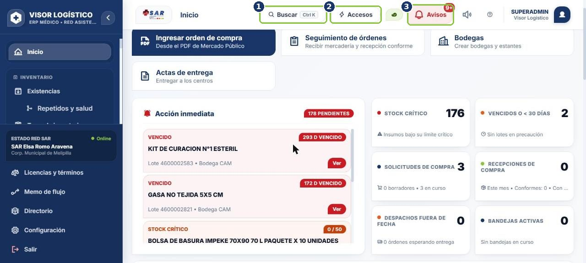
- 1 Buscar cualquier pantalla (Ctrl+K)
- 2 Accesos directos
- 3 Avisos
1 Reglas del sitio
Estas reglas valen para todo el personal que usa el Visor: bodega, enfermería, TENS y administrativos. Vienen de las decisiones del proyecto y de cómo funciona hoy el sistema.
1.1 Tu cuenta es personal
- Entra siempre con tu propio correo y tu clave. No prestes tu clave ni uses la sesión abierta de otra persona.
- Todo lo que haces queda registrado a tu nombre (tu correo): ingresos, traspasos, actas, ajustes, solicitudes procesadas. Si otra persona usa tu cuenta, lo que ella haga queda como tuyo.
- Al terminar el turno en un equipo compartido, pulsa Salir. Si quedan operaciones sin internet, el Visor te avisa: espera a que se envíen (o pulsa Sincronizar ahora) antes de salir.
- Las cuentas las crea el administrador en Usuarios. Cada persona tiene un rol y solo ve lo que su rol permite.
- Excepción: la página «Pedir insumos» (la de los servicios, en el teléfono) no usa cuenta: quien pide escribe su nombre y correo. El inventario de la bodega de uso sí se hace con usuario y clave personal.
1.2 No hay datos de pacientes
El Visor es un sistema logístico: registra dónde está cada insumo y quién lo movió, no a quién se le administró.
- Nunca escribas nombre, RUT, domicilio, número de cama ni ningún otro dato de un paciente: ni en observaciones, ni en notas, ni en el nombre de un producto, ni en el texto «Copiar para WhatsApp».
- No subas fotos ni escaneos donde aparezca un paciente (por ejemplo, una receta o una etiqueta con nombre).
- Única excepción: el folio DAU de los medicamentos controlados (estupefacientes y psicotrópicos), que se pide al registrar su consumo en bandeja o carro de paro. Se guarda en un registro aparte, de acceso restringido. Los traspasos entre bodegas no lo piden.
- El Libro de Control de estupefacientes y psicotrópicos (DS 404 y DS 405) sigue siendo obligación del establecimiento y del Director Técnico, en su propio libro. El Visor no lo reemplaza.
1.3 Quién aprueba qué
| Acción | Quién la hace | Quién la aprueba |
|---|---|---|
| Ajuste de stock (sumar o restar) | Cualquier rol de bodega | Superadministrador. Si lo hace el Superadministrador, se aplica directo; si lo hace otro rol, queda como solicitud con código AJU hasta que el Superadministrador lo apruebe. |
| Faltantes de una toma de inventario | Quien cierra la toma | Superadministrador. Si no eres administrador, también los sobrantes quedan como solicitud. |
| Corregir cantidad, lote o vencimiento de un ingreso | Quien ingresó | Directo, dentro de las 12 h y si no salió nada del producto. Después, solo con Ajuste. |
| Emitir acta de entrega | Encargado de bodega, Administrador, Superadministrador | — |
| Confirmar entrega, editar o eliminar un acta | Administrador o Superadministrador | — |
| Procesar y recibir solicitudes | Encargado de bodega, Administrador, Superadministrador | — |
| Inventario de una bodega de uso | Encargada de transitoria (cuenta) | Bodega: Aceptar y descontar o Pedir reconteo |
| Crear, renombrar, cerrar o eliminar bodegas | Administrador o Superadministrador | — |
1.4 FEFO: sale primero lo que vence primero
- En toda salida (acta, transferencia, solicitud) se usa primero el lote que vence antes (FEFO: First Expired, First Out). Es la práctica que piden las Buenas Prácticas de Distribución de la UE para la rotación de existencias.
- El Visor ya lo propone:
- Las actas reservan por el lote que vence primero.
- Las solicitudes prellenan ese lote.
- En Transferencias, los lotes aparecen ordenados por vencimiento, pero tú eliges cuánto sacar de cada uno.
- Si sacas físicamente otro lote (por ejemplo, porque la caja pistoleada es de otro), registra ese lote: lo que dice el Visor debe ser lo que salió de verdad.
- Lo vencido no se entrega. Lo que está en CUARENTENA no se puede mover ni entregar.
1.5 Lote obligatorio al despachar
- Regla decidida: un producto que entró sin lote (S/L) debe tener su lote antes de despacharlo (acta, transferencia o solicitud). Sin lote no hay trazabilidad si se retira un producto del mercado.
- El Visor todavía no lo exige solo. Mientras tanto, es una norma de trabajo:
- Si vas a despachar algo que figura S/L y la caja sí trae lote, avisa al encargado para corregirlo antes (Editar ingreso dentro de 12 h, o Ajuste).
- No despaches un controlado sin lote.
- Al ingresar, marca «Este producto no trae lote ni fecha de vencimiento» solo si de verdad no los trae.
1.6 Sin internet: deja el Visor abierto
El Visor guarda una copia de los datos en el equipo y la mantiene al día sola. Sin conexión:
- Funcionan sin internet:
- Ingresos e Ingreso rápido.
- Transferencias.
- Ajustes.
- Emitir actas (salvo las de una orden de compra).
- Confirmar productos, Procesar y Marcar recibido en Solicitudes.
- Toma de inventario.
- Etiquetas de cajas. Todo eso queda guardado en el equipo con un folio provisional (por ejemplo, ING-P-…, AE-P-…) y se envía solo.
- Necesitan internet:
- Confirmar entrega de un acta, subir actas firmadas, eliminar actas.
- Actas de una orden de compra.
- Leer fotos en Ingreso rápido.
- Oxígeno portátil.
- Crear o cerrar bodegas.
- Qué hacer: 1. Mantén el Visor abierto y con tu misma sesión. La cola se envía sola al volver internet, cada minuto y al volver a la pantalla. 2. Mira abajo a la derecha: «N sin sincronizar». Al tocarlo se abre «Hecho sin conexión», con Sincronizar ahora. 3. Si algo quedó «para revisar», el stock cambió entre medio (otra persona movió el producto). Avisa al encargado: se reintenta o se Descarta. El Visor nunca descuenta a ciegas. 4. No cierres sesión con operaciones pendientes. Cada persona aplica solo las suyas: lo que hiciste tú se envía cuando tú vuelves a entrar en ese equipo.
- Mientras no haya internet, lo que ves en pantalla es lo último descargado. Lo que hiciste sin conexión todavía no se resta de la vista.
- En iPhone la cola avanza solo con el Visor abierto. Instala el Visor en la pantalla de inicio: si lo usas solo en Safari y pasan unos 7 días sin abrirlo, el teléfono puede borrar los datos guardados.
1.8 Correlativos y folios
Cada documento tiene un número que no se repite ni se reutiliza. Si un documento se anula, su número queda registrado como ANULADO. Puede haber saltos en la numeración (un número que se tomó y la operación falló): es normal y queda a la vista de la auditoría. En el menú Directorio → Nomenclaturas (administradores) está la lista completa.
| Código | Formato (2026) | Qué es |
|---|---|---|
| AE | AE-2026-0021 | Acta de entrega (también de oxígeno) |
| HIS | HIS-45 | Acta histórica (de antes del sistema) |
| SOL | SOL-2026-0001 | Solicitud de insumos. Mientras llega el número oficial, se ve uno provisional SI-AAAAMMDD-HHMM-… |
| DIST | DIST-2026-0003 | Distribución a centros |
| ING | ING-2026-000045 | Ingreso |
| INV | INV-2026-00012 | Ingreso rápido y toma de inventario |
| AJU | AJU-2026-000047 | Ajuste de stock |
| CAM | CAM-2026-000046 | Corrección de datos con código de seguimiento |
| TRA | TRA-2026-00031 | Traspaso entre bodegas (también en solicitudes) |
| REP | REP-2026-00004 | Reposición de bodega de uso |
| CIE | CIE-2026-00002 | Cierre de bodega |
| REC | REC-2026-00015 | Recepción de mercadería de una orden |
| BAN | BAN-2026-00118 | Bandeja de turno |
| SUG | SUG-2026-00009 | Sugerencia de compra |
| BUL | BUL-2026-000123 | Caja etiquetada (la que se pistolea) |
| PI / PO | PI-2026-0007 / PO-2026-0003 | Precinto de inventario / precinto de oxígeno |
| SAR | SAR-000013 (lote: SAR-000013-L02) | Código del producto y de su lote |
| ERR | ERR-AUT-001 | Código de un aviso de error |
| …-P-… | AJU-P-20261115-7KQ2 | Folio provisional, hecho sin internet. Se reemplaza por el definitivo al sincronizar. |
Desde el 1 de enero de 2027, AE, SOL, DIST, PI y PO pasan a 5 dígitos, e ING, CAM y AJU tienen cada uno su propio contador. Los números antiguos no cambian.
Reglas: - Anota el folio en los papeles físicos (guía, acta, caja). Con él se encuentra todo en el Visor. - Nunca escribas un folio «a mano» inventado. Si es provisional (con -P-), espera el definitivo antes de enviarlo a otra persona.
1.9 Cada firma tiene una responsabilidad
| Quién | Qué declara |
|---|---|
| Quien registra en el Visor (cualquier acción) | Que lo registrado es lo que pasó físicamente. Tu correo queda en el historial, que no se puede modificar. |
| Quien entrega (firma del acta) | Que entregó esos productos, en esas cantidades, a ese centro. Su nombre y cargo salen impresos. |
| Quien recibe (firma del acta) | Que recibió conforme lo que dice el acta. Si falta algo, debe anotarlo en el acta antes de firmar. |
| Quien confirma la entrega (sube el acta firmada) | Que el documento está firmado y corresponde a esa acta. Con eso el stock se descuenta. No confirmes un acta sin la firma de quien recibe. |
| Quien marca «Recibido» en una solicitud | Que la mercadería llegó a la bodega de destino. |
| Quien aprueba un ajuste (Superadministrador) | Que la diferencia está justificada con el motivo indicado. |
1.10 Qué hacer ante un error
- Lee el aviso completo. Los avisos de error traen una referencia «Ref. ERR-XXX-NNN». El aviso desaparece a los pocos segundos: sácale una foto o una captura de pantalla.
- No repitas la operación a ciegas. Primero revisa si quedó hecha: - en Historial; - en la bitácora del acta; - en el indicador «N sin sincronizar». Repetir un ingreso crea un segundo ingreso.
- No intentes «arreglarlo» con otro movimiento (por ejemplo, un traspaso de vuelta o un ingreso inventado). Las diferencias se corrigen con Ajustes de Stock (motivo y código AJU), que aprueba el Superadministrador.
- Avisa al encargado o al administrador con: - la foto del aviso (con su Ref.); - qué estabas haciendo; - la pantalla y la hora; - el folio (AE, SOL, ING…).
- Si la página se congela («La página no responde»), cierra la pestaña y vuelve a abrir el Visor. No borres los datos del navegador (8.7).
2 Inventario
Antes de empezar: el Visor sin internet - Arriba a la derecha hay un aviso que dice «En vivo · hh:mm» cuando hay conexión, o «Sin conexión · datos de las hh:mm» cuando no hay. Sin conexión, lo que ves es la última copia que bajó el equipo. - Lo que hagas sin internet queda guardado en el equipo. Abajo a la derecha aparece «N sin sincronizar» y se envía solo cuando vuelve la conexión. Si lo tocas, ves el detalle y el botón Sincronizar ahora. - Para que funcione sin internet, el equipo tiene que haber abierto el Visor al menos una vez con conexión. En iPhone, instala el Visor en la pantalla de inicio y déjalo abierto hasta que se sincronice.
2.1 Existencias
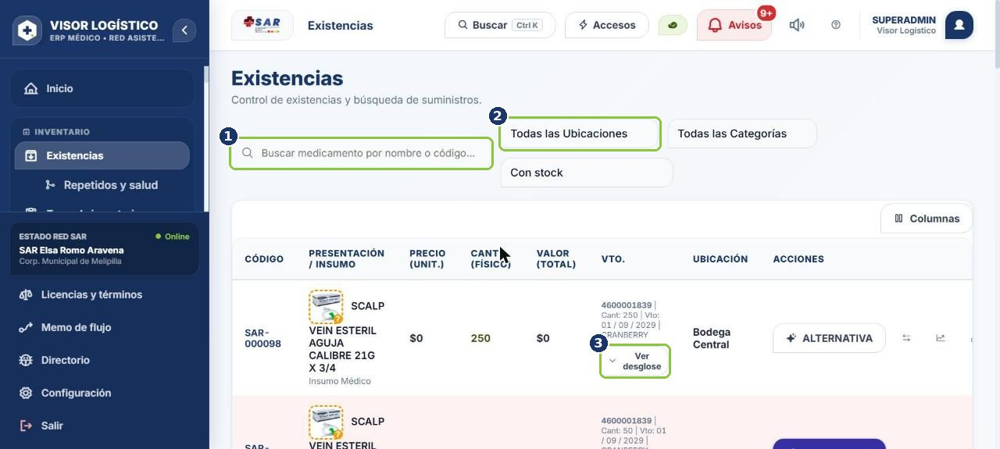
- 1 Busca el producto
- 2 Filtra por bodega
- 3 Ver desglose por lote
Para qué sirve: ver cuánto hay de cada producto, en qué bodega, con qué lotes y cuándo vencen.
Quién lo usa: operador, administrador y superadministrador. No aparece para los roles «Solo Bodega transitoria» ni «Solicitante». En el teléfono también está en la barra de abajo (Existencias).
Paso a paso 1. En el menú lateral, entra a INVENTARIO → Existencias. 2. Escribe en el buscador «Buscar medicamento por nombre o código...» (desde 2 letras). También puedes buscar por el ID de Mercado Público. 3. Si quieres, filtra con las tres listas de arriba: - Ubicación: Todas las Ubicaciones, Bodega Central, Bodegas Transitorias, Bandejas en Turno. - Categoría: Todas las Categorías, Insumo Médico, Medicamento. - Estado: Con stock (es el que viene marcado), Todos (incluye agotados), Agotados, Stock Crítico, Stock Normal. 4. Lee la fila de cada producto: - CANT. (FÍSICO): verde = normal; naranjo = bajo el mínimo; rojo con STOCK CRÍTICO o AGOTADO = queda poco o nada. Si dice «+N reservado», esas unidades están apartadas para actas de entrega por confirmar y no están disponibles. - VTO.: los lotes con su cantidad y vencimiento. Un lote vencido o por vencer sale en color y con aviso ⚠. 5. Para ver el detalle por lote, toca Ver desglose (para cerrarlo, Ocultar desglose). 6. Botones de la fila: - Flechas (Mover a otra bodega): abre la transferencia con el producto ya elegido. - Gráfico (Ver Kardex y Trazabilidad): abre el Historial Clínico de Insumo, con los movimientos del producto. - Lápiz: editar los datos del producto. 7. Al pie de la tabla cambias de página con los números o las flechas (20 productos por página). Lo último que entró o se movió aparece primero.
Si pasa esto… - No aparece un producto que sé que existe: probablemente tiene stock 0 y el filtro está en «Con stock». Escribe su nombre (así aparece igual) o cambia el filtro a Todos (incluye agotados). - «Mover» dice «No hay otra bodega a la que mover. Crea una en Bodegas.»: solo existe una bodega activa. Pídele al administrador que cree la otra. - La tabla se queda en «Cargando inventario...»: revisa la conexión y vuelve a entrar a Existencias.
Reglas - Lo «reservado» no se entrega a otro servicio: ya está comprometido en un acta. - No corrijas cantidades con el lápiz para «cuadrar»: para eso están la Toma de inventario o los Ajustes de Stock, que dejan registro y código.
Sin internet: muestra la última copia guardada en el equipo. Mover a otra bodega queda en cola y se aplica sola al volver la conexión.
2.2 ¿Dónde está?
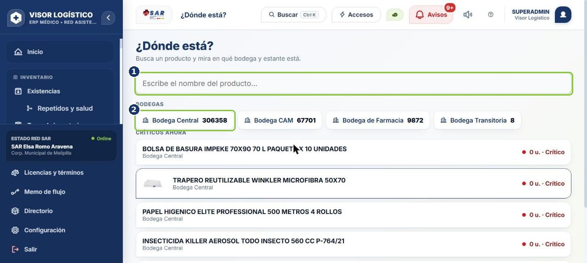
- 1 Escribe el producto
- 2 O toca una bodega para ver lo que tiene
Para qué sirve: saber rápido en qué bodega y en qué estante está un producto.
Quién lo usa: todo el personal con acceso al Visor (también lo ve enfermería). No aparece para «Solo Bodega transitoria» ni «Solicitante».
Paso a paso 1. Menú lateral → INVENTARIO → ¿Dónde está? 2. Antes de escribir ves atajos: - Búsquedas recientes: tócalas para repetirlas. - Bodegas: cada una con su total. Si la tocas, se abre la ficha de esa bodega. - Críticos ahora: los productos más bajos de stock. 3. Escribe al menos 3 letras del nombre en «Escribe el nombre del producto…». También sirve el ID de Mercado Público (3 números o más). 4. En cada producto ves las bodegas donde hay y cuántas unidades tiene cada una: - En una bodega con estantes salen los códigos de estante con su cantidad (por ejemplo «A-01 · 30»). Toca uno para abrir ese estante. - «N sin ubicar» = unidades que están en la bodega pero no tienen un estante asignado. - «Bodega sin estantes» = esa bodega no usa estantes. 5. En la ficha de una bodega o de un estante están los botones Ver stock e Inventario. Con rol de bodega (operador o administrador) aparecen además Ingresar, Sacar, Ajuste y Ubicar.
Si pasa esto… - «No encontré productos con ese nombre.»: prueba con otra palabra del nombre o con menos letras (aquí la búsqueda es exacta; no corrige errores de escritura). - «No se pudo buscar. Intenta de nuevo (ref. DE-01).»: falló la lectura. Sal y vuelve a entrar a la pantalla. - Toqué «Inventario» en la ficha de la bodega y la toma no viene con la bodega elegida: elígela tú en Bodega antes de Abrir toma.
Reglas - Si mueves producto de un estante a otro, actualízalo con Ubicar en la ficha de la bodega. Si no, la próxima persona lo va a buscar donde ya no está.
Sin internet: busca en la última copia guardada en el equipo. No confirmado en terreno (ver notas).
2.3 Toma de inventario
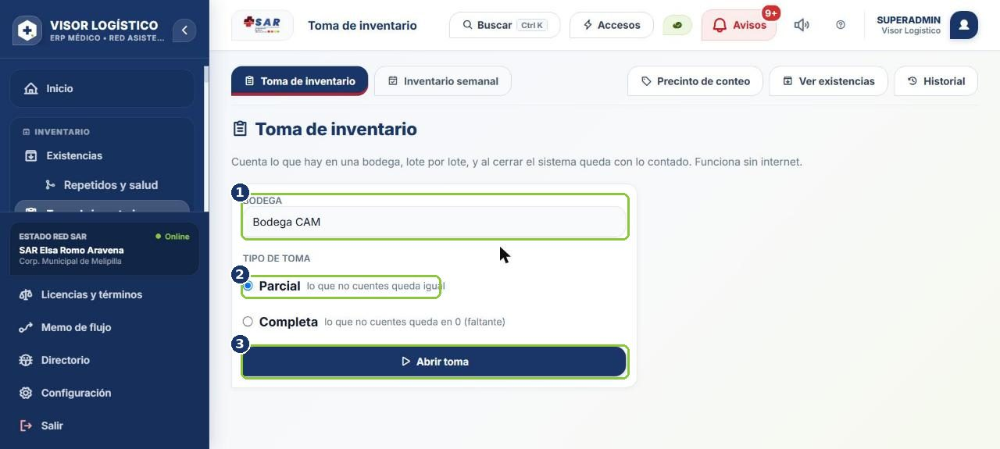
- 1 Elige la bodega
- 2 Tipo de toma: parcial o completa
- 3 Abrir toma
Para qué sirve: contar una bodega lote por lote. Al cerrar la toma, el sistema queda con lo contado y cada diferencia queda registrada con su código. Esta toma no suma lo contado al stock: lo reemplaza.
Quién lo usa: operador, administrador y superadministrador. Cualquiera de los tres puede contar y cerrar, pero cada rol aplica cosas distintas:
| Rol | Sobrantes y lotes nuevos | Faltantes |
|---|---|---|
| Superadministrador | Entran al cerrar | Se descuentan al cerrar |
| Administrador | Entran al cerrar | Quedan esperando al superadministrador |
| Operador | Quedan esperando al superadministrador | Quedan esperando al superadministrador |
Lo que queda esperando aparece en Ajustes de Stock → Aprobaciones Pendientes (solo lo ve el superadministrador). Cada uno ve lo suyo en Mis Solicitudes.
Abrir la toma
- Menú lateral → INVENTARIO → Toma de inventario (o Accesos → Conteos de inventario).
- Elige la Bodega.
- Elige el Tipo de toma: - Parcial (es la que viene marcada): lo que no cuentes queda igual. - Completa: lo que no cuentes queda en 0 y sale como faltante. Úsala solo si vas a contar toda la bodega.
- Toca Abrir toma. Arriba aparece «Toma INV-…» con la bodega, el tipo y cuántos productos llevas contados.
- Si aparece «Ya hay una toma abierta», alguien ya está contando esa bodega. Toca Volver y ponte de acuerdo con esa persona. Usa Abrir igual solo si de verdad corresponde.
Contar
- En el recuadro «Pistolea la etiqueta o escribe el producto…»: - Con pistola: pistolea la etiqueta de la caja (BUL). Una caja cerrada suma sola todo su contenido al lote que corresponde y aparece «Caja contada». Si la caja está abierta, aparece «Caja abierta»: cuenta las unidades y anótalas a mano (paso 8). - Con la cámara del teléfono: toca QR y apunta a la etiqueta. - Sin etiqueta: escribe parte del nombre o del código (desde 2 letras) y toca el producto en la lista, que muestra su foto.
- Se abre la ficha del producto con la tabla Lote · Vence · Sistema · Contado · Estado. El estado cambia a medida que cuentas: - «Quedan N»: todavía faltan N unidades para llegar a lo que dice el sistema. - «Coincide»: está cuadrado. - «Sobran N» o «Lote nuevo N»: contaste más de lo que hay en el sistema, o un lote que el sistema no tiene.
- Para anotar a mano:
- En «¿De qué lote es lo que cuentas?», toca el lote (si el producto tiene un solo lote, ya viene marcado). También puedes tocar la fila del lote en la tabla.
- Si el lote no aparece, toca + Lote que no está y escribe el Lote y el Vencimiento. Si el producto no trae ninguno de los dos, toca No trae lote ni vencimiento.
- Escribe la cantidad en «Cantidad (0 si no hay)» y toca Sumar al conteo (Enter también funciona).
- Puedes contar el mismo lote por partes (un estante, después otro): las cantidades se van sumando. Cada parte queda en una lista con una ✕ para quitarla si te equivocaste.
- Para seguir con otro producto, toca Otro producto o pistolea la siguiente caja. Lo que ya contaste queda abajo, en Contados (N). Si tocas una tarjeta de esa lista, vuelves a ese producto.
Revisar y cerrar
- Toca Revisar y cerrar (se activa cuando llevas al menos un producto contado, o desde el inicio si la toma es completa).
-
Revisa la tabla de diferencias (Producto · Lote · Sistema · Contado · Diferencia). Las filas marcadas «por recontar» aparecen cuando:
- la diferencia es mayor a 5 % o a 10 unidades, o
- el producto es un medicamento controlado (en ese caso, cualquier diferencia).
Vuelve a contar ese lote. Si el número está bien, toca Volví a contar: está bien. Si no, vuelve a Contar y corrígelo. 13. Si un producto tiene unidades reservadas en actas por confirmar y lo contado no las cubre, el sistema pregunta «¿Esas actas ya se entregaron?» y muestra los folios de las actas. Responde: - Sí, ya se entregaron: el material ya salió de la bodega y no se descuenta del conteo. - No, siguen aquí: lo que no encontraste cuenta como faltante. Sin esta respuesta no se puede cerrar. 14. Si un producto dice «cuenta todos sus lotes (pon 0 en los que no estén)», toca Contar y anota 0 en los lotes que no encontraste. 15. Si hay faltantes, elige el Motivo de los faltantes y, si quieres, escribe una Observación. 16. Toca Cerrar toma INV-… y confirma con Cerrar toma. Al terminar aparece «Toma cerrada» con cuántos ajustes se aplicaron y cuántos quedaron esperando al superadministrador.
Si pasa esto… - «No hay un producto así en esta bodega. Si llegó nuevo, regístralo en Ingresos.»: el producto no está registrado en esa bodega. No lo cuentes aquí: ingrésalo por Ingresos. - «… no existe en el sistema.» al pistolear: esa etiqueta no está registrada. Busca el producto por su nombre. - «La caja es de «…», que no está en (bodega).»: esa caja figura en otra bodega. Avisa a bodega para hacer la transferencia y no la cuentes en esta toma. - «Ya contada»: esa caja ya está en el conteo y no se suma dos veces. - «Elige de qué lote es lo que contaste.» o «Escribe cuántas unidades contaste (0 si no hay).»: falta marcar el lote o escribir la cantidad. - El botón Cerrar está gris: quedan filas por recontar o preguntas sin responder. - «No se cerró la toma» … «tuvieron movimientos mientras contabas»: alguien movió esos productos mientras contabas. El sistema borró su conteo y actualizó lo que dice el sistema: vuelve a contarlos y cierra de nuevo. Lo que ya se aplicó no se repite. - «Sin internet: cierre en cola»: la toma se aplica sola cuando vuelva la conexión. Deja el Visor abierto con tu mismo usuario. - «Toma … con errores»: algunos lotes no se pudieron ajustar. Cuéntalos en una toma nueva.
Reglas - No descartes una toma que ya tiene conteo. Descartar esta toma (abajo de todo, pide confirmar con Descartar) borra todo lo contado en ese equipo. El stock no cambia, pero el conteo se pierde. - No cuentes en dos pestañas ni en dos ventanas del mismo equipo. Comparten el mismo borrador y queda guardado lo último que se grabó, así que puedes perder conteos. - Termina la toma en el mismo equipo y navegador donde la abriste. El conteo queda guardado solo en ese equipo hasta que la cierres. - No abras dos tomas de la misma bodega en equipos distintos. Si lo haces, el segundo cierre se rechaza lote por lote. - Usa la Completa solo si vas a contar todo: lo que no cuentes queda en 0. - Lo que está en cuarentena no entra en la toma.
Sin internet: - Se puede abrir la toma (el folio sale provisional, «INV-P-…»), contar con la pistola o a mano, y cerrar. El cierre queda en cola y se aplica solo al volver la conexión. - Para que esto funcione, el equipo tiene que haber cargado esa bodega antes con conexión. - La cámara (QR) puede no funcionar sin internet; usa la pistola o escribe el producto (ver notas).
2.4 Bultos y etiquetas
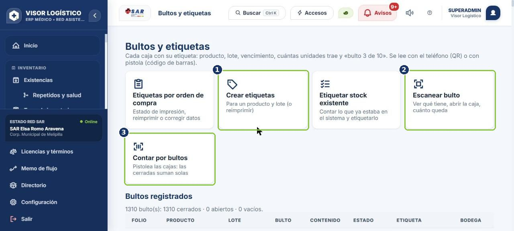
- 1 Crear etiquetas
- 2 Escanear bulto
- 3 Contar por bultos
Para qué sirve: cada caja física lleva una etiqueta con producto, lote, vencimiento, unidades y «bulto 3 de 10», un QR (para la cámara del teléfono) y un código de barras (para la pistola). Desde aquí se crean las etiquetas, se consulta qué tiene una caja y se cuenta pistoleando cajas.
Quién lo usa: operador, administrador y superadministrador. No aparece para enfermería, «Solo Bodega transitoria» ni «Solicitante».
Menú lateral → INVENTARIO → Bultos y etiquetas. Tiene cinco botones grandes y, abajo, la tabla Bultos registrados (Folio, Producto, Lote, Bulto, Contenido, Estado, Etiqueta, Bodega).
Crear etiquetas (producto nuevo o caja sin etiqueta)
- Toca Crear etiquetas. Se abre Etiquetas de bulto, en la pestaña Nuevas etiquetas.
- En Producto, escribe el nombre y elige el producto y el lote de la lista.
- Revisa Lote, Vence y Bodega.
- En ¿Cómo viene?, completa Total de unidades, Unidades por caja grande y Cajas grandes. Si cambias las cajas, se recalculan las unidades por caja. La última caja lleva lo que sobra.
- Si la caja grande trae cajas más chicas, marca La caja grande trae cajas interiores y escribe las Unidades por caja interior.
- Si quieres, completa Proveedor, Orden de compra y Fecha de recepción.
- Revisa el resumen (por ejemplo «10 etiquetas: 10 cajas grandes de 220 u.») y toca Crear etiquetas.
- Toca Imprimir ahora (se abre el PDF para la Zebra) o Después (las etiquetas quedan «Sin imprimir» en Impresión de etiquetas).
Etiquetar stock existente (lo que ya estaba en el sistema sin etiqueta)
- Toca Etiquetar stock existente. Se abre en la pestaña Contar y etiquetar.
- Busca el producto y toca el lote que estás contando. Si el lote no está, toca la opción que dice otro lote y escríbelo.
- Anota las Cajas grandes (solo las completas), las Unidades por caja grande y las Unidades sueltas (sin caja). El Total contado se calcula solo. Si una caja está incompleta, corrige el total a mano (Volver a calcular deshace el cambio).
- Compara con En el sistema (este lote) y mira la Diferencia.
- Toca Registrar conteo y crear etiquetas. Si solo hay unidades sueltas, el botón dice Registrar conteo.
- Si hay diferencia, el sistema pide confirmar: - El superadministrador ve Sumar y seguir o Descontar y seguir. - Los demás ven Enviar solicitud y seguir: la diferencia queda como solicitud para el superadministrador. - Revisar vuelve atrás sin guardar.
- Al final ofrece Imprimir ahora o Después.
Escanear bulto (ver qué tiene una caja)
- Toca Escanear bulto. Se abre la cámara y el recuadro «Pistola: escanea aquí · o escribe el folio y Enter».
- Pistolea la etiqueta, apunta la cámara o escribe el folio y toca Buscar.
- Aparece la ficha de la caja: producto, lote, vencimiento, unidades que tiene y estado (Cerrada, Abierta o Vacía).
- Según lo que pase con la caja: - Abrir caja (si estaba cerrada) o ¿Cuánto queda? (si estaba abierta): ajusta con − / + y toca Listo, o toca Está vacía. - Marcar vacía: la caja ya no tiene nada. - Volver a cerrada (llena): si se marcó vacía por error y está completa. - Reimprimir etiqueta: pide el motivo.
- Si lees el QR de la etiqueta con la cámara normal del teléfono, se abre el Visor directo en esa caja (tienes que tener la sesión iniciada).
Contar por bultos (pistolear cajas)
- Toca Contar por bultos.
- Pistolea cada caja: - Cerrada: suma sola su contenido. Si es una caja grande, sus cajas interiores ya quedan contadas. - Abierta: pregunta «¿cuántas unidades quedan?». Responde con − / + y Listo, o toca Está vacía. - Caja grande abierta: pregunta cuántas unidades sueltas hay dentro (Listo). Después pistolea sus cajas interiores una por una. - Vacía: no suma.
- Abajo se arma la tabla Producto · Lote · Cajas · Contado · Sistema. Lo que no cuadra sale en rojo. «Sistema» incluye todo el lote de esa bodega, también lo que no tiene etiqueta.
- Toca Guardar conteo. Ojo: este conteo no cambia el stock. Para dejar el stock igual a lo contado, usa Toma de inventario.
Si pasa esto… - «… no es una etiqueta de bulto.»: pistoleaste otro código (por ejemplo, el del fabricante). Busca la etiqueta del Visor, la que tiene el logo y dice «BULTO n / N». - «… ya estaba contado … no se suma dos veces.»: está bien, esa caja ya se contó. - «Eso parece una etiqueta: primero indica cuánto queda en esta caja.»: la pistola escribió un folio en el campo de cantidad. Escribe la cantidad a mano y después pistolea la caja siguiente. - «No se pudo abrir la cámara…» / «La cámara no está disponible…»: da permiso de cámara al navegador, o usa la pistola o escribe el folio. - «Sin internet solo puedes crear N etiqueta(s)…»: sin internet hay un número limitado de folios guardados en el equipo. Crea menos cajas o espera la conexión. - «Este producto tiene … reservadas para actas por confirmar y varios lotes…»: no se sabe de qué lote salen esas unidades. Confirma o elimina esas actas antes de contar. - «Ya hay una solicitud de ajuste pendiente para este lote…»: pídele al superadministrador que la rechace y vuelve a contar.
Reglas - Una etiqueta por caja física. No pegues la misma etiqueta en dos cajas ni reimprimas «por si acaso». - Si el lote ya tiene cajas etiquetadas (aparece el aviso «cuéntalas igual, pero no les crees etiqueta otra vez»), no crees etiquetas nuevas para esas cajas. - Cuando saques unidades de una caja, márcala como abierta o vacía. Si no, en el próximo conteo va a sumar como llena. - No uses «Etiquetar stock existente» para mercadería que recién llegó: eso se ingresa por Ingresos o por la recepción de la orden de compra.
Sin internet: - Se pueden crear etiquetas (con los folios reservados en ese equipo), imprimirlas, escanear cajas, abrirlas o vaciarlas y contar por bultos. Todo se sube solo al volver la conexión. - Para que esto funcione, el equipo tiene que haber abierto el Visor antes con conexión. - La cámara puede no funcionar sin internet: usa la pistola (ver notas).
2.5 Impresión de etiquetas
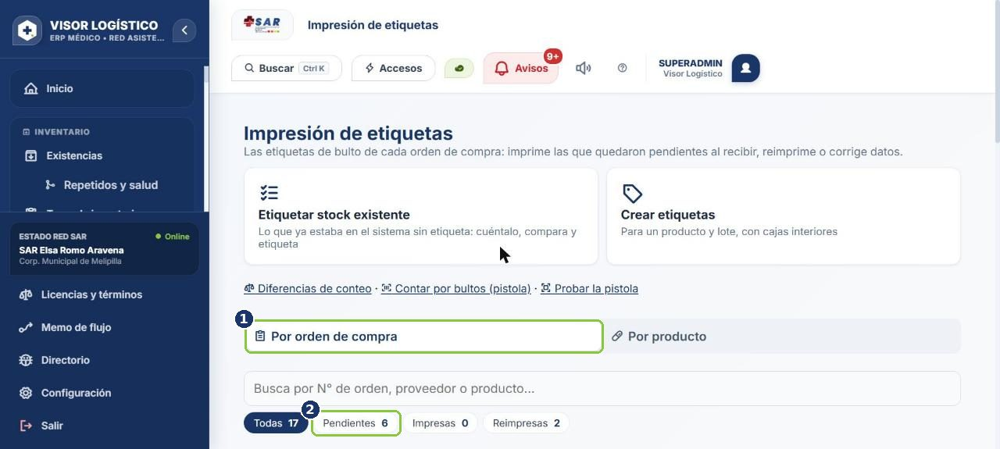
- 1 Etiquetas por orden de compra
- 2 Filtra las pendientes
Para qué sirve: ver todas las etiquetas por orden de compra o por producto, imprimir las que quedaron pendientes al recibir, reimprimir y corregir datos.
Quién lo usa: operador, administrador y superadministrador. No aparece para enfermería, «Solo Bodega transitoria» ni «Solicitante». El número rojo junto al menú indica cuántas órdenes tienen etiquetas pendientes.
Paso a paso 1. Menú lateral → INVENTARIO → Impresión de etiquetas. 2. Elige la vista Por orden de compra o Por producto. 3. Busca por N° de orden, proveedor, producto, lote o folio. Sirven varias palabras, sin tildes ni mayúsculas. 4. Filtra con Todas, Pendientes, Impresas o Reimpresas. 5. Toca una orden (o un producto) para abrir el detalle: - Arriba ves las cifras: unidades recibidas, etiquetas creadas, etiquetas por imprimir y unidades sin etiqueta. - Si dice «Falta etiquetar N u.», toca Crear las que faltan, indica las cajas y créalas. - Imprimir pendientes (N): imprime las que nunca se imprimieron y las editadas. - Para reimprimir, marca las etiquetas (o Seleccionar todas) y toca Reimprimir seleccionadas (N). Te pide el motivo (¿Por qué se reimprime?) y lo confirmas con Reimprimir. - Editar datos (por grupo) o el lápiz de una etiqueta: cambia el producto, lote, vencimiento, bodega, proveedor o fecha. Las unidades solo se pueden cambiar si la caja está cerrada. Guardar cambios no toca el stock: la etiqueta queda «Editada · reimprimir». - Órdenes te devuelve a la lista. 6. Abajo de los botones grandes hay tres enlaces: Diferencias de conteo (lo registrado al etiquetar stock existente), Contar por bultos (pistola) y Probar la pistola.
Qué significa cada estado:
| Estado | Qué significa |
|---|---|
| Faltan etiquetas / Sin etiquetas | Llegó mercadería que todavía no tiene etiqueta |
| Sin imprimir | Las etiquetas existen, pero nunca se imprimieron |
| Impresión parcial | Algunas se imprimieron y otras no |
| Cambios por reimprimir / Editada · reimprimir | Se corrigieron datos después de imprimir |
| Impresa / Reimpresa | Ya se imprimieron una vez / más de una vez |
| Sin registro (anterior) | Etiqueta de antes de que el sistema anotara las impresiones |
Cómo imprimir en la Zebra - El PDF se abre en una pestaña nueva. Si el teléfono bloquea las ventanas emergentes, se descarga. - Imprime en papel de 100 × 60 mm, a tamaño real, sin «ajustar a la página». Si la hoja sale escalada, la pistola no lee el código.
Si pasa esto… - «Impresión no registrada»: el PDF salió, pero no se pudo anotar la impresión (falló la conexión o la sesión). Revisa la conexión; la etiqueta seguirá apareciendo como pendiente. - La etiqueta dice «Impresa» pero el papel no salió: el sistema la marca como impresa cuando abre el PDF, no cuando sale el papel. Reimprímela y en el motivo pon «no salió de la impresora». - «No pude leer las etiquetas.»: falta conexión o la sesión expiró. Vuelve a entrar.
Reglas - Siempre anota un motivo real al reimprimir (etiqueta dañada, se cayó, se corrigieron datos). - Si corriges datos de una etiqueta ya pegada, reimprímela y reemplaza la etiqueta de la caja.
Sin internet: se puede imprimir lo que ya estaba cargado en el equipo y la impresión se anota al volver la conexión. La lista de órdenes puede no estar al día (ver notas).
2.6 Probar la pistola
Para qué sirve: ver si la pistola lee el código de barras de las etiquetas y si la impresora está imprimiendo a tamaño real.
Quién lo usa: el mismo personal de Impresión de etiquetas. Conviene hacerlo al recibir una pistola nueva o cuando una no lee.
Paso a paso 1. Entra a Impresión de etiquetas y toca el enlace Probar la pistola. 2. Toca Hoja de prueba (PDF) e imprímela en la Zebra a tamaño real (100 × 60 mm, sin «ajustar a la página»). 3. Con una regla, mide la línea de abajo de la hoja: debe medir 50 mm. Si mide otra cosa, la impresora está escalando la hoja y hay que corregir el tamaño de papel en la impresora. 4. Haz clic en «Pistolea aquí cada código de la hoja» y pistolea los códigos A a F, uno por uno. 5. La tabla marca cada código: - Sí (en verde): lo leyó bien. - «Sí, pero escribió «…» (revisar idioma del teclado de la pistola)»: lo leyó, pero escribe otros caracteres. - —: no lo leyó. 6. Anota cuáles leyó y avísale al encargado del sistema. Con ese resultado se define el formato definitivo de la etiqueta.
Si pasa esto… - «La pistola termina con Tab / nada en vez de Enter»: el Visor la acepta igual, pero conviene configurarla con Enter (sufijo CR) usando el manual de la pistola. - No lee ninguno: revisa la medida de la línea de 50 mm. Si está bien, puede que la pistola tenga desactivado Code 128: hay que activarlo con los códigos de su manual. - «La librería de PDF aún no carga; intenta de nuevo en unos segundos.»: espera un momento y vuelve a tocar el botón.
Reglas - No uses la hoja de prueba para contar: sus números no son cajas.
Sin internet: la hoja de prueba se genera en el equipo y la prueba de lectura no necesita conexión. No confirmado en terreno.
2.7 Pedir insumos desde el teléfono
Para qué sirve: que cualquier funcionario (enfermería, TENS, administrativos) pida insumos médicos, de aseo o de oficina desde su teléfono, sin usuario ni clave, y vea cómo avanza su pedido.
Quién lo usa: cualquier persona del SAR, con solo su nombre y su correo. El botón Inventario de bodega de esa misma página es para las encargadas de bodegas de uso y pide usuario (se explica en el módulo Bodega transitoria).
El link - La página es https://sarinventario.web.app/solicitar.html. Es una página aparte, que solo sirve para pedir: no muestra el resto del Visor. - El superadministrador tiene el link y su QR en INVENTARIO → Fotos de productos → Accesos directos para el teléfono → Pedir insumos (botón QR para mostrarlo o compartirlo). - Para dejarlo como app en el teléfono, abre el link y despliega: - Cómo instalar en Android: en Chrome, toca ⋮ → Agregar a pantalla de inicio (o Instalar app) → Agregar. Si aparece el botón Instalar «Pedir insumos» ahora, basta con tocarlo. - Cómo instalar en iPhone: si lo abriste desde WhatsApp, toca ⋯ → Abrir en Safari. Después toca Compartir → Agregar a inicio → Agregar. - Queda el ícono verde «Pedir insumos» en la pantalla de inicio.
Paso a paso (pedir) 1. Abre Pedir insumos. En ¿Qué necesitas hacer?, toca Pedir insumos. 2. Elige el tipo: Insumos médicos, Aseo u Oficina. 3. En ¿Quién pide?, escribe Tu nombre (nombre y apellido) y Tu correo, y toca Continuar. El teléfono los recuerda para la próxima vez. Si otra persona usa el mismo teléfono, toca Cambiar al lado de «Pidiendo como…». 4. En Agregar producto, escribe las primeras palabras (desde 2 letras). La búsqueda tolera tildes y errores chicos («dimer» encuentra «D-DIMMER»), pero los números tienen que ser exactos (suero 250 no encuentra suero 500). 5. Toca el producto. Ajusta la Cantidad con − / + y toca Agregar. 6. Si no lo encuentras, toca No está en la lista: - Escribe el Nombre del producto completo: qué es, marca, medida o tamaño. - Ajusta la Cantidad. - Si puedes, toca Foto (opcional) y saca una foto de la caja o la etiqueta. - Toca Agregar. Si aparece «¿Es alguno de estos?», revisa si tu producto ya estaba en la lista y tócalo. 7. Revisa Tu solicitud (N): cambia las cantidades con − / + o quita productos con ✕. 8. Si quieres, escribe una Nota (opcional) (por ejemplo, «urgente para hoy»). 9. Toca Enviar solicitud. Aparece «Solicitud enviada» con tu número SOL-AAAA-NNNN. Si el número todavía no llega, dice «N° oficial en camino».
La vista del que pide: «Tus solicitudes» - Debajo del formulario aparecen tus solicitudes hechas desde ese teléfono. Puedes buscarlas por N° (SOL-…) o por producto. - Cada solicitud muestra su recorrido:
| Estado | Qué significa |
|---|---|
| Enviada | Llegó a bodega |
| Procesando | Bodega la está revisando |
| Procesada | Bodega ya preparó y movió lo que había |
| Cerrada | Entregada |
| Anulada | Bodega la anuló |
| Por enviar (sin internet) | Todavía está solo en tu teléfono |
- Si bodega no tenía algo, aparece «No disponible: …» con el producto y la cantidad que faltó.
- Cuando tu solicitud cambia de estado aparece un aviso en pantalla. Toca Ver para ir a ella.
- Modificar: mientras la solicitud siga en Enviada, puedes cambiarla desde el mismo teléfono. Toca Modificar, haz los cambios y toca Guardar cambios (o Cancelar). Cuando bodega empieza a prepararla, ya no se puede cambiar.
- Si tu correo es institucional (cormumel.cl o vivirsalud.cl), también te llegan avisos por correo en horario hábil.
Si pasa esto… - «Escribe tu nombre y apellido.» / «Escribe un correo válido…»: completa los dos datos. - «Nombre completo» / «Más detalle» al agregar a mano: el nombre es muy corto. Sin foto hay que describir más (qué es, marca, medida o para qué se usa). - «No está en (tipo), pero sí en otro tipo»: el producto está clasificado en otro tipo. Puedes agregarlo igual. - «Sin internet: se guardará en este teléfono y se enviará sola al volver la conexión.»: está bien. La solicitud queda «Guardada en el teléfono» y se envía sola. - «No pude cargar la lista. Si no tienes internet, ábrela una vez con conexión para dejarla guardada.»: la primera vez se necesita internet. - «Aún no disponible»: bodega todavía no activa el acceso sin cuenta. Avisa a bodega. - «Bodega ya empezó a prepararla: no se puede cambiar.»: si necesitas algo más, haz una solicitud nueva. - No me aparecen mis solicitudes anteriores: solo se ven las hechas desde ese mismo teléfono y navegador.
Reglas - Una solicitud por pedido. No mandes la misma dos veces «por si no llegó»: revisa Tus solicitudes. - Usa tu nombre y tu correo reales. No pidas a nombre de otra persona. - No escribas datos de pacientes (nombre, RUT, cama) en la nota ni en los productos. - Usa No está en la lista solo si de verdad no aparece. Antes prueba con otra palabra.
Sin internet: - La primera vez necesita conexión. - Después, la página abre sin internet y puedes armar y enviar la solicitud: queda «Por enviar (sin internet)» y se envía sola cuando vuelve la conexión. - El N° SOL se asigna cuando llega a bodega.
3 Movimientos y bodegas
3.1 Ingresos
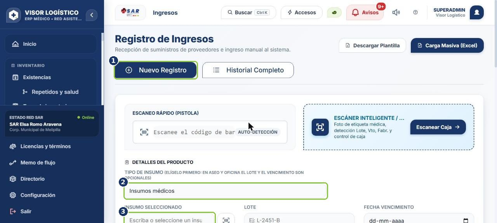
- 1 Nuevo registro
- 2 Tipo de insumo
- 3 Elige el insumo
Para qué sirve Para registrar la mercadería que llega: de un proveedor, de una compra sin orden o en préstamo desde otro centro. Al confirmar, el producto queda disponible de inmediato en la bodega que elijas y el movimiento queda en el Historial con su código ING.
Quién lo usa Encargado de bodega, Administrador y Superadministrador. Enfermería no tiene acceso.
Paso a paso 1. En el menú, entra a MOVIMIENTOS → Ingresos. La pantalla se titula «Registro de Ingresos». 2. En TIPO DE INSUMO, elige primero Insumos médicos, Insumos de aseo o Insumos de oficina. Esto define si el lote y el vencimiento son obligatorios. 3. En INSUMO SELECCIONADO, escribe el nombre. El Visor te sugiere los nombres que ya existen: si el producto ya está, elige el nombre sugerido en vez de escribir otro parecido. El botón con el código de barras, al lado, abre la cámara para leer el código de la caja (se cierra con Cancelar Escáner). 4. Escribe el LOTE y la FECHA VENCIMIENTO tal como vienen en la caja. - En insumos médicos son obligatorios. Si el producto de verdad no los trae, marca «Este producto no trae lote ni fecha de vencimiento». Quedará como S/L (sin lote). - En aseo y oficina son opcionales. 5. TALLA (opcional): úsala en guantes, ropa o sondas. Si eliges «Otra (escribir número u otra medida)…», escribe la medida. Cada talla queda como un producto aparte. 6. ID MERCADO PÚBLICO (opcional): sirve para encontrar la foto del producto. 7. Indica la cantidad: - Por unidades: escribe la CANTIDAD. - Por cajas: escribe N° DE CAJAS y UNIDADES POR CAJA; el total se calcula solo. 8. CATEGORÍA: elige una de la lista o crea una nueva. 9. PROVEEDOR: escribe o elige el proveedor. Si en TIPO DE COMPRA eliges «Préstamo / traspaso desde otro centro», el campo pasa a llamarse CENTRO DE ORIGEN: escribe ahí el centro que lo envía. 10. DESTINO: elige la bodega donde queda guardado. Revísalo siempre: el stock queda en esa bodega. 11. N° DE OC O DOCUMENTO (opcional, se puede asociar después), DOC. RESPALDO (PDF o foto, opcional) y OBSERVACIONES. 12. Pulsa CONFIRMAR INGRESO. Debe aparecer el aviso «Éxito — Movimiento registrado y auditado correctamente.» y el formulario queda en blanco. 13. Abajo, en ÚLTIMOS REGISTRADOS, verás los tres últimos ingresos.
Préstamos que debemos devolver. Si ingresaste algo como préstamo de otro centro, aparece el recuadro «PRÉSTAMOS DE OTROS CENTROS POR DEVOLVER». Al devolverlo, escribe la cantidad y pulsa Devolver.
Sin internet: el ingreso sí funciona. Queda guardado en el equipo con un folio provisional ING-P-… y aparece el aviso «Sin internet: ingreso en cola». Se aplica solo cuando vuelve la conexión. El archivo de respaldo no viaja en la cola: adjúntalo después.
Si pasa esto… - «Falta la talla»: elegiste «Otra» y no escribiste la medida. Escríbela o elige «Sin talla». - «Revisar ingreso» (el movimiento quedó en el historial pero el producto no aparece en Existencias): no sigas ingresando. Avisa al administrador. - «Error Crítico — Fallo en la sincronización»: revisa en Historial si el ingreso quedó antes de repetirlo. Si envías el formulario dos veces, quedan dos ingresos. - Entró menos de lo que escribiste: ese producto tenía una deuda (se entregó con acta antes de que existiera stock en el sistema). El ingreso salda primero esa deuda. Es correcto; queda registrado. - Me equivoqué en la cantidad, el lote o el vencimiento: puedes corregirlo desde el Historial durante las 12 horas siguientes, siempre que no haya salido nada de ese producto. Después, solo con Ajustes de Stock (con motivo y código AJU).
Reglas - El lote y el vencimiento se copian tal cual de la caja. No inventes un lote. - Un producto que ya existe se ingresa con su mismo nombre: no crees variantes («GUANTE M», «GUANTES TALLA M»…). - El ingreso no tiene paso de cuarentena: lo que confirmas queda disponible para entregar. Revisa el estado y el vencimiento antes de confirmar.
3.2 Ingreso rápido
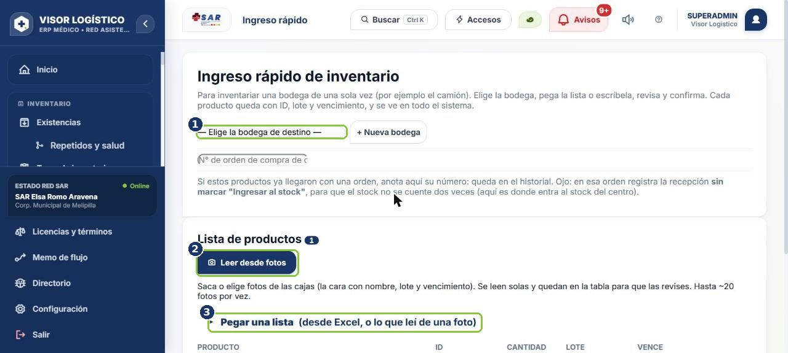
- 1 Bodega de destino
- 2 Leer desde fotos
- 3 Pegar una lista
Para qué sirve Para cargar de una sola vez el inventario de una bodega completa (por ejemplo, el camión): pegas una lista o lees fotos de las cajas, la revisas en una tabla y la ingresas toda junta. Queda con un folio INV.
Quién lo usa Administrador y Superadministrador. Para el Encargado de bodega la pantalla dice «Esta sección es para administradores y encargados de bodega» y no deja usarla.
Paso a paso 1. Entra a COMPRAS · ADQUISICIONES SAR → Ingreso rápido. 2. En «— Elige la bodega de destino —» elige la bodega. Si no existe, pulsa + Nueva bodega y escribe el nombre en la ventana del navegador. 3. Si los productos llegaron con una orden de compra, escribe su número en el campo de la orden (es opcional). Ojo: en esa orden registra la recepción sin marcar «Ingresar al stock», para no contar el stock dos veces. 4. Carga la lista de una de estas tres formas: - Leer desde fotos: saca o elige fotos de las cajas (la cara con el nombre, el lote y el vencimiento), hasta unas 20 por vez. Los productos aparecen en la tabla para revisar. - Pegar una lista: abre el desplegable, pega una línea por producto (producto ; ID ; cantidad ; lote ; vencimiento) y pulsa Agregar a la tabla. - + Agregar fila: escribe cada producto a mano. 5. Revisa la tabla, fila por fila. Las filas en rojo necesitan producto y cantidad. Si una fila trae un aviso amarillo (una duda de la lectura de la foto), revísalo con la caja en la mano. 6. Pulsa Ingresar a «bodega». El navegador pregunta «Se ingresarán N unidades de M productos a "…". ¿Confirmas?»: acepta. 7. Al terminar aparece «N unidades de M productos ingresadas a … (INV-…)».
Sin internet: el ingreso sí funciona (folio provisional INV-P-…) y se aplica solo al volver la conexión. Leer desde fotos y + Nueva bodega necesitan internet.
Si pasa esto… - «Falta conectar el script» o «Falta la clave de lectura»: la lectura de fotos no está configurada. Avisa al administrador; mientras tanto, pega la lista o escribe las filas. - «No se terminó el ingreso»: lo que alcanzó a guardarse ya está en la bodega. Revisa la bodega antes de repetir, para no ingresar dos veces.
Reglas - Úsalo para lo que contaste físicamente. A diferencia del ingreso normal, no salda deudas de actas anteriores. - Vacía la tabla (Vaciar tabla) si cambias de bodega a mitad de la carga.
3.3 Transferencias entre bodegas
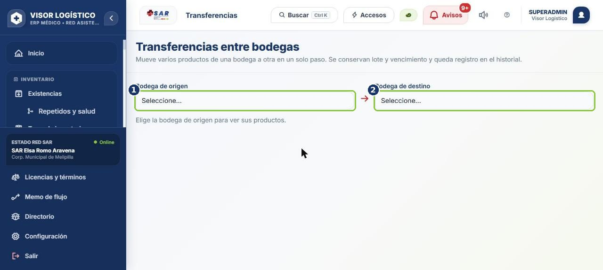
- 1 Bodega de origen
- 2 Bodega de destino
Para qué sirve Para mover productos de una bodega a otra (por ejemplo, del camión a la transitoria). Se conservan el lote y el vencimiento, y queda registro en el Historial con folio TRA. El stock sale del origen y entra al destino en el mismo momento.
Quién lo usa Encargado de bodega, Administrador y Superadministrador. Enfermería no tiene acceso.
Paso a paso 1. Entra a MOVIMIENTOS → Transferencias. 2. Elige la Bodega de origen y la Bodega de destino. 3. Aparecen los productos con stock del origen. Usa «Buscar producto o ID Mercado Público…» para filtrar. 4. Marca la casilla de cada producto que vas a mover (Marcar todo lo visible los marca todos). 5. En Cantidad a mover: - Si el producto tiene un solo lote, viene escrita la cantidad total; corrígela si mueves menos. - Si tiene varios lotes, aparece un casillero por lote, en 0. Escribe cuánto sacas de cada lote. Los lotes vienen ordenados por vencimiento: saca primero el que vence antes. 6. Si quieres, escribe una Nota (opcional) (por ejemplo, «reposición de la bodega de turno»). 7. Pulsa Mover seleccionados. Revisa el resumen de la ventana «¿Mover N productos?» y pulsa Mover. 8. Abajo verás «N movido(s)» y, si alguno falló, «No se movieron N» con el motivo. Si todo salió bien, la pantalla queda en blanco para otra transferencia.
Otra forma: desde Bodegas (detalle de una bodega) el botón Transferir / Traspaso abre la ventana «Transferencia de Stock» para mover un solo producto. Para varios productos, usa siempre el menú Transferencias.
Sin internet: sí funciona. Sale el mensaje «Sin conexión: N movimiento(s) guardado(s) en este teléfono». Se aplica solo cuando vuelve internet, con el stock que haya en ese momento. Si ya no alcanza (porque alguien movió el producto entre medio), queda «para revisar» y nunca se descuenta a ciegas.
Si pasa esto… - «El destino debe ser distinto del origen.» / «Marca al menos un producto.»: corrige y vuelve a pulsar. - «…: indica cuánto mover (en productos con varios lotes, de qué lote).»: dejaste todos los lotes en 0 o escribiste más de lo que hay. - El producto dice «Cuarentena» y no se puede marcar: no se mueve hasta que se resuelva la cuarentena. - «No pude leer el stock»: la lista puede salir vacía aunque haya productos. Vuelve a elegir la bodega o recarga la página.
Reglas - Mueve físicamente lo mismo que registras: mismo producto, mismo lote y misma cantidad. - Saca primero el lote que vence antes (FEFO). - Lo reservado en actas por confirmar no aparece como disponible y no se puede mover.
3.4 Actas de entrega
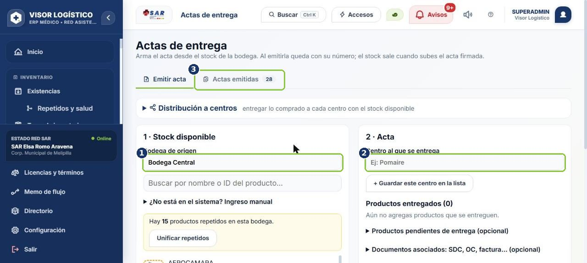
- 1 Bodega de origen
- 2 Centro al que se entrega
- 3 Actas emitidas
Para qué sirve Para entregar productos a otro centro con un acta oficial numerada (AE-AAAA-NNNN), en PDF y Word. El stock pasa por tres momentos:
| Momento | Qué pasa con el stock |
|---|---|
| Borrador (mientras armas el acta) | No cambia. El borrador queda guardado en este equipo. |
| Emitir acta | El stock queda reservado: sigue en la bodega, pero nadie más lo puede usar. |
| Confirmar entrega (subir el acta firmada) | Recién ahí se descuenta del stock. |
Quién lo usa - Armar y emitir actas: Encargado de bodega, Administrador y Superadministrador. - Confirmar entrega, Subir firmada, Editar y Eliminar acta: solo Administrador y Superadministrador. - Enfermería no tiene acceso.
Paso a paso — Emitir un acta (pestaña «Emitir acta») 1. Entra a MOVIMIENTOS → Actas de entrega, pestaña Emitir acta. 2. En 1 · Stock disponible, elige la Bodega de origen. 3. Busca el producto en «Buscar por nombre o ID del producto…». En cada producto verás lo Disponible y lo que está reservado en otras actas. 4. En la fila del producto escribe: - Pedido (opcional): lo que el centro pidió en total. - Cantidad a entregar: lo que entregas ahora. Luego pulsa Agregar. - Si lo que entregas es menos que lo pedido, la diferencia queda como pendiente del centro. - Si no tienes nada, pon 0 y el pedido: queda todo como pendiente. - Si el producto no tiene stock aquí pero sí en otra bodega, el origen cambia solo a esa bodega y aparece un aviso con Correcto o Volver a …. 5. ¿No está en el sistema? Ingreso manual: úsalo solo si tienes el producto físicamente y no está registrado. Queda como provisional y como sobregiro (deuda) hasta que ingrese su orden de compra. Si es un medicamento controlado, marca «Es medicamento controlado (no se permite sin stock)». 6. En 2 · Acta, escribe el Centro al que se entrega (con + Guardar este centro en la lista queda en la lista para la próxima vez). 7. Revisa Productos entregados. Si corresponde, abre los desplegables: - Productos pendientes de entrega. - Documentos asociados: SDC, OC, factura… (opcional). - Firmas: nombre y cargo de quien entrega (queda guardado en el equipo) y de quien recibe (opcional). 8. Si no estás seguro del formato, pulsa Acta de prueba · PDF o Acta de prueba · Word. No descuenta stock ni gasta número. 9. Pulsa Emitir acta y reservar stock. La ventana «¿Emitir el acta?» te recuerda que el stock no se descuenta ahora: queda reservado hasta que subas el acta firmada. Si hay productos sin respaldo en sistema, los lista. Pulsa Emitir acta (o Revisar para volver). 10. Aparece «Acta emitida — AE-… · el stock sale al subir el acta firmada.» y se descarga el PDF. Imprímelo y hazlo firmar al entregar.
Paso a paso — Preparar la mercadería (picking) 1. En la pestaña Actas emitidas, pulsa Picking en la fila del acta, o Hoja de picking dentro del acta. 2. Imprime la hoja y retira de la bodega lo que indica.
Paso a paso — Confirmar la entrega (Administrador o Superadministrador) 1. Escanea o fotografía el acta firmada (PDF o foto, máximo 6 MB). 2. En Actas emitidas, abre el acta con Ver acta. Su estado dice «Por confirmar · stock reservado». 3. Pulsa Confirmar entrega. En la ventana «Confirmar la entrega AE-…» pulsa Subir acta firmada y elige el archivo. 4. Aparece «Entrega AE-… confirmada · stock descontado». El acta pasa a Firmada.
Otras acciones en «Actas emitidas» - Filtros: Pendientes por firmar, Firmadas, Con productos pendientes, Todas, y el buscador por número, centro, producto, fecha o estado. - Pendientes (N): lista lo que le falta entregar a ese centro según esa acta. - Dentro de Ver acta: - Descargar ▾ (PDF o Word). - Ver acta firmada y Descargar firmada. - Bitácora del acta: quién la emitió, si se envió el correo y cuándo se confirmó. - Subir firmada: solo aparece en actas ya confirmadas que no tienen archivo (por ejemplo, las históricas) y en actas de oxígeno. No cambia el stock. - ⋯ → Editar (Administrador): corrige un acta emitida. - ⋯ → Eliminar acta (Administrador): pide un motivo. El stock reservado o entregado vuelve a la bodega, el acta queda ANULADA y su número no se vuelve a usar. - Reservar su stock ahora (Administrador): aparece si hay actas antiguas, emitidas antes de que existiera la reserva, cuyo stock todavía se puede usar en otros movimientos. - Acta anterior al sistema (histórica): sirve para registrar un acta en papel ya entregada. Queda como HIS-N° con su fecha original y descuenta el stock de inmediato.
Distribución a centros dentro de Actas. Si llegas desde Distribución a centros, arriba del stock aparece el panel de esa distribución, con Agregar los que tienen stock y Armar acta con lo agregado (ver capítulo 5).
Sin internet: - Emitir sí funciona. El acta queda en cola con folio AE-P-… y se descarga un PDF provisional (dice «PROVISIONAL») para firmar. Al volver internet se emite con su número AE definitivo y reserva el stock; lo que no alcance queda como sobregiro. Descarga después el PDF definitivo desde Actas emitidas. - Necesitan internet: las actas que vienen de una orden de compra, Confirmar entrega, Subir firmada y Eliminar acta.
Si pasa esto… - El botón Emitir está gris: arriba de los botones aparece la lista de lo que falta (centro, bodega, cantidades). - «…: es medicamento controlado, no puede entregarse sin stock en sistema»: un controlado solo se entrega con stock registrado. - «Sin respaldo: N» en un producto: estás entregando más de lo que hay en el sistema. Quedará como sobregiro. Antes de emitir, confirma que de verdad lo tienes físicamente. - «Esta acta ya no está pendiente de confirmar»: otra persona la confirmó o la eliminó. Actualiza la pantalla. - «El archivo pesa más de 6 MB»: escanea con menos calidad o en blanco y negro. - El correo no salió: la bitácora del acta dice si quedó pendiente (sale en horario hábil, de lunes a viernes de 8:00 a 17:00) o NO enviado.
Reglas - Un acta emitida no es una entrega. La entrega existe cuando se sube el acta firmada con Confirmar entrega. - Máximo 60 productos por acta. - Para probar el formato, usa Acta de prueba, nunca un acta real que después tengas que eliminar. - Lo que escribas en «¿Entregas físicamente otro similar?…» es solo interno: no sale en el acta.
3.5 Solicitudes recibidas
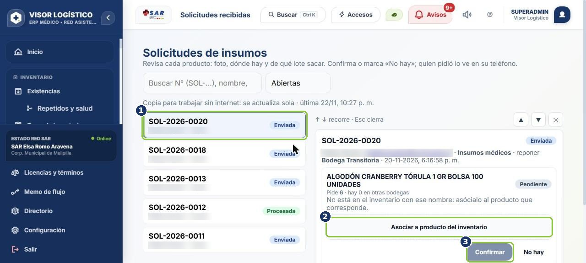
- 1 Elige la solicitud
- 2 Asocia el producto si no está en el inventario
- 3 Confirmar (o «No hay»)
Para qué sirve Es la bandeja de bodega para atender lo que piden los servicios desde «Pedir insumos» (la página del teléfono) y los inventarios de las bodegas de uso (transitoria, aseo, oficina). Cada solicitud tiene un número SOL-AAAA-NNNN y pasa por estos estados:
| Estado | Significa |
|---|---|
| Enviada | Llegó; nadie la ha revisado. |
| Procesando | Bodega empezó a revisar los productos. |
| Procesada | El stock ya se movió (salió de bodega o va en camino). |
| Cerrada | Entregada o recibida. |
| Anulada | Se canceló sin mover stock. |
Quien pidió ve el estado en su teléfono.
Quién lo usa Encargado de bodega, Administrador y Superadministrador. El menú muestra un número con las solicitudes nuevas.
Paso a paso — Revisar cada producto 1. Entra a MOVIMIENTOS → Solicitudes recibidas. Usa el filtro (Abiertas, Enviadas, Procesando, Procesadas, Cerradas, Todas) o busca por N° SOL, nombre, correo o producto. 2. Abre la solicitud. Cada producto pedido trae su foto y una tabla Dónde · Lote · Vence · Hay · Sacar. - La columna Sacar viene prellenada: primero la bodega a la que se pidió y, después, el lote que vence antes. Corrígela si sacas de otro lote. - En las reposiciones de una bodega de uso, solo aparecen lotes de otras bodegas (Central, camión, etc.). 3. Si el producto fue escrito a mano por quien pidió y no aparece en el inventario, pulsa Asociar a producto del inventario y búscalo por su nombre de fábrica. 4. Pulsa Confirmar para guardar lo elegido (queda Confirmado o Parcial), o No hay si no tienes. Dejar todo en 0 también cuenta como «No hay» y quien pidió queda avisado. 5. Si te equivocaste, pulsa Cambiar para reabrir el producto, siempre que todavía no se haya movido.
Paso a paso — Pistolear la caja Úsalo cuando la caja tiene etiqueta BUL: así el stock y la caja quedan cuadrados. 1. En el producto, pulsa Pistolear o leer QR de la caja. 2. Pistolea la etiqueta, o pulsa Cámara (QR) para leerla con el teléfono. 3. El Visor revisa que la caja sea de ese producto, que no esté vacía y que su lote tenga stock. Luego pregunta «¿Qué vas a sacar de esta caja?»: - La caja completa (N u.), o - Unidades sueltas: escribe cuántas. - En una caja grande con cajas pequeñas: sale la caja grande completa, o pistoleas cada caja pequeña que sacas. 4. Pulsa Sacar de esta caja. La caja queda en la lista (con ✕ se quita). Para agregar otra, pulsa Otra caja (pistola o QR); al terminar, Listo. 5. Lo pistoleado pasa a la columna Sacar. Pulsa Confirmar.
Paso a paso — Procesar 1. Cuando todos los productos están decididos, el botón de abajo dice: - Procesar: enviar a «bodega» si es una reposición, o - Procesar: entregar si es un pedido de una persona. Si todavía dice Procesar (faltan N), te quedan productos por decidir. 2. Revisa la ventana «¿Procesar SOL-…?» y pulsa Procesar. - Reposición: el stock sale de su bodega y queda «En tránsito» (en camino). Todavía no está disponible en la bodega de destino. - Pedido de una persona: el stock sale de la bodega por lote (salida). 3. La solicitud pasa a Procesada.
Paso a paso — En tránsito y recibir (solo reposiciones) 1. Lleva la mercadería a la bodega de uso. 2. Cuando llegue, pulsa Marcar recibido en «bodega». Si la encargada ya lo marcó en su teléfono, el botón dice Confirmar recibido (lo marcó …). 3. En la ventana «¿Recibido en …?» revisa producto, cantidad y lote, y pulsa Recibido. 4. El stock entra a la bodega de uso y la solicitud se cierra sola.
Paso a paso — Cerrar (pedidos de personas) - Cuando entregues la mercadería, pulsa Cerrar solicitud (entregada).
Otras acciones - Copiar para WhatsApp: copia el texto de picking. - Anular: solo mientras no se haya movido stock. - Inventario por revisar (inventarios de bodegas de uso): muestra por producto lo que decía el sistema, lo contado y lo usado. - Aceptar y descontar aplica lo usado. - Pedir reconteo (N) devuelve los productos marcados a la encargada para que los cuente de nuevo. - Mientras el inventario no esté aceptado, el botón dice Procesar (acepta el inventario).
Sin internet: Confirmar, Procesar y Marcar recibido quedan en cola (se ve «en cola» o «En cola: se hará solo al volver internet») y se aplican solos al volver la conexión, sin duplicarse. La pantalla usa la copia del equipo, que se actualiza sola; la línea de estado dice «Copia para trabajar sin internet: se actualiza sola · última …».
Si pasa esto… - «… no es una etiqueta de caja (BUL).»: pistoleaste otro código. Busca la etiqueta BUL de la caja. - «Esa caja es de «…», no de lo que se pide aquí.»: tomaste otra caja. - «… ya está elegida en …: una caja sale una sola vez.»: esa caja (o su caja grande o sus cajas pequeñas) ya está asignada en otra solicitud. - «La caja dice X, pero el lote … tiene stock en Y…» o «El lote … de esta caja no tiene stock en el sistema…»: no adivines otro lote. Avisa al encargado para corregir la caja o el stock. - «En el lote … pistoleaste más de lo que pusiste en «Sacar»…»: corrige la cantidad o quita la caja con ✕. - «N lote(s) no se movieron…»: pulsa Reintentar lo que no se movió. Si un lote ya no se puede mover, pulsa Quedarse con lo movido. - «Ya movido — Este producto ya salió de su bodega: no se puede cambiar.»: es correcto; lo movido no se deshace desde aquí.
Reglas - Lo que está «En tránsito» no es stock disponible: no lo entregues ni lo cuentes en ninguna bodega hasta marcarlo recibido. - Marca Recibido solo cuando la mercadería está físicamente en la bodega de destino. - Saca primero el lote que vence antes, salvo que la caja pistoleada diga otro.
3.6 Distribución a centros
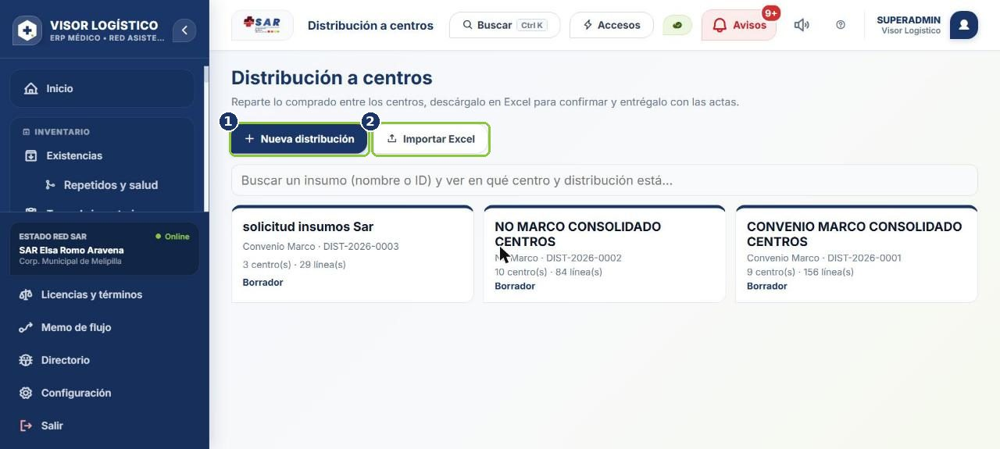
- 1 Nueva distribución
- 2 Importar Excel
Para qué sirve Para repartir entre los centros una compra global (SDC → orden de compra). Se arma una lista por centro con el mismo formato de las planillas de los centros (Convenio Marco o No Marco), se descarga en Excel para confirmar y se entrega con actas. Cada distribución lleva un correlativo DIST-AAAA-NNNN.
Quién lo usa Encargado de bodega, Administrador y Superadministrador.
Paso a paso 1. Entra a MOVIMIENTOS → Distribución a centros. 2. Crea la distribución de una de dos formas: - Nueva distribución: escribe el nombre (por ejemplo, «SDC 1122 · insumos de curación») y elige el tipo de compra (Convenio Marco o No Marco). - Importar Excel: elige la planilla de los centros (una hoja por centro). 3. En el detalle completa Nombre, Tipo de compra, N° de SDC, Orden de compra asociada (cuando exista) y Estado. 4. Cada centro tiene su pestaña. Con + Centro, Renombrar, Quitar centro y + Agregar línea ajustas la lista. 5. Por cada línea verás: - Entregado antes: escríbelo a mano solo si se entregó antes de usar el Visor. - Entregado con actas: se calcula solo. - Pendiente. - Stock / se puede entregar: lo que hay en Bodega Central. 6. Pulsa Guardar. 7. Para mandarla a confirmar: Descargar Excel (marca con columna Entregado si quieres incluir lo ya entregado). 8. Para entregar: en la pestaña del centro pulsa Entregar a este centro (acta). Se abre Actas de entrega con el acta precargada: lo que hay en stock se entrega y lo que falta queda pendiente. Sigue el capítulo 3.
Sin internet: no verificado. Trabaja esta pantalla con conexión.
Si pasa esto… - «No encontré líneas en ninguna hoja (se busca la columna «DESCRIPCIÓN»)»: la planilla no tiene la columna DESCRIPCIÓN. Revisa el archivo. - «Un acta admite 60 productos: se armó con los primeros 60…»: emite esa acta y repite para el resto. - «Este centro no tiene cantidades pendientes de entrega.»: ya se entregó todo. - Aparece «sin stock en sistema»: la orden aún no se ha ingresado. Se podrá entregar cuando se ingrese.
Reglas - No anotes a mano en «Entregado antes» lo que ya salió con actas del Visor: se contaría dos veces. - Las distribuciones no se borran: se archivan (estado Archivada).
3.7 Pendientes por entregar
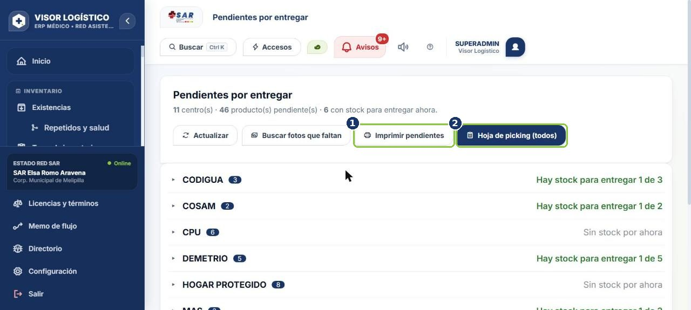
- 1 Imprimir pendientes
- 2 Hoja de picking
Para qué sirve Muestra, por centro, lo que se pidió en las actas y todavía no se entrega, cruzado con el stock disponible. La campana avisa cuando ya hay stock para entregar.
Quién lo usa Encargado de bodega, Administrador y Superadministrador.
Paso a paso 1. Entra a MOVIMIENTOS → Pendientes por entregar. 2. Arriba ves el resumen: centros, productos pendientes y cuántos tienen stock para entregar ahora. 3. Abre un centro. Cada producto aparece agrupado por fecha, acta, orden o distribución, con su estado: Completo, Se pueden N o Sin stock. 4. Hoja de picking (de un centro) o Hoja de picking (todos): imprime lo que hay que retirar de bodega. 5. Imprimir pendientes: imprime la lista para enviar al centro. 6. Para entregar, arma el acta en Actas de entrega (capítulo 3). 7. Actualizar recarga los datos.
Sin internet: muestra lo último descargado; para ver datos al día, necesita conexión.
Reglas - Esta pantalla no entrega nada: solo informa. La entrega siempre es con acta.
3.8 Oxígeno portátil
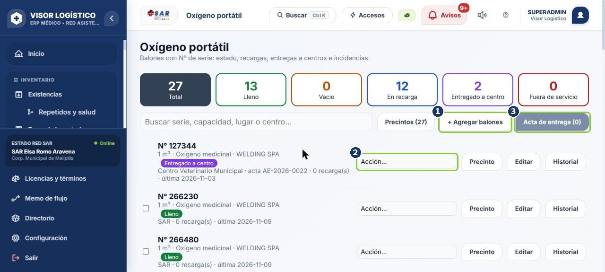
- 1 Agregar balones
- 2 Acción de cada balón
- 3 Acta de entrega
Para qué sirve Para llevar el control de cada balón de oxígeno portátil por su N° de serie: estado, recargas, préstamos o entregas a centros e incidencias. Los balones son equipos, no insumos: no se descuentan del inventario.
Estados: Lleno, Vacío, En recarga, Entregado a centro, Fuera de servicio.
Quién lo usa Encargado de bodega, Administrador y Superadministrador. Enfermería no tiene acceso.
Paso a paso — Dar de alta balones 1. Entra a MOVIMIENTOS → Oxígeno portátil. 2. Pulsa + Agregar balones. 3. Escribe los N° de serie (uno por línea o separados por coma), y elige Capacidad, Tipo de gas, Proveedor, Estado actual y Fecha de carga. 4. Pulsa Guardar.
Paso a paso — Registrar lo que pasa con un balón 1. En la fila del balón, abre Acción… y elige una opción: - Enviado a recarga - Recarga recibida (lleno) - Marcar como vacío (se usó) - Devuelto al SAR - Registrar incidencia (sin cambiar estado) - Fuera de servicio - Volver a servicio (vacío) - Cambiar capacidad - Cambiar tipo de gas 2. Completa la fecha y los datos que pida, y pulsa Guardar. 3. Historial muestra todo lo que le ha pasado al balón. 4. Editar corrige datos mal escritos (serie, capacidad, gas, proveedor, fecha, recargas). Pide un motivo y deja un código CAM. El estado no se cambia desde Editar: se cambia con Acción….
Paso a paso — Entregar balones a un centro con acta 1. Marca la casilla de los balones llenos que salen (solo los llenos tienen casilla). 2. Pulsa Acta de entrega (N). 3. Escribe el Centro, el documento asociado (opcional), quién Entrega y quién Recibe. 4. Pulsa Emitir acta. Sale un acta AE con el mismo formato y correlativo de las actas de insumos, y se descarga el PDF. 5. Cuando esté firmada, súbela con Subir firmada (en el panel «Prestados a otros centros» o en Actas de entrega).
Paso a paso — Préstamo de balones (llenos o vacíos) 1. En el panel «Prestados a otros centros», pulsa Registrar préstamo. 2. Elige el centro, la fecha de entrega y los balones (solo los que están en el SAR), y escribe quién entrega y quién recibe. 3. Pulsa Generar acta y registrar: se emite un acta AE y se descarga para firmar. 4. Después usa Subir firmada, Agregar fotos, Ver acta firmada o Ver acta y bitácora.
Precintos: Precinto (por balón) o Precintos (N) (todos los de la lista filtrada) imprimen la etiqueta de control con el N° de serie.
Sin internet: necesita internet. Esta pantalla no tiene cola sin conexión.
Si pasa esto… - «El balón … no está lleno»: solo se entregan con acta los balones Lleno. - «Ya existe otro balón con el N° de serie …»: revisa la serie; no se repite. - «Elige el motivo de la corrección.»: en Editar, el motivo es obligatorio.
Reglas - El estado del balón en el Visor debe ser el mismo que en la realidad en todo momento. - No se registran datos de pacientes (ni a quién se le puso el balón). - Un acta de oxígeno no se anula: cuando el balón vuelve, se registra Devuelto al SAR.
3.9 Bodegas (administración)
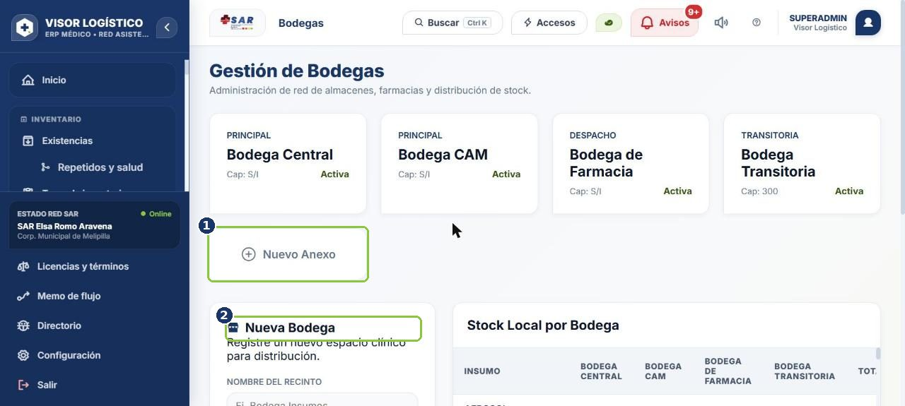
- 1 Nuevo anexo
- 2 Formulario «Nueva Bodega»
Para qué sirve Para crear bodegas, cambiarles el nombre, definir si usan estantes, cambiar el encargado, cerrarlas y archivarlas.
Quién lo usa Administrador y Superadministrador. El Encargado de bodega no ve este menú.
Paso a paso — Crear una bodega 1. Entra a INVENTARIO → Bodegas («Gestión de Bodegas»). 2. En Nueva Bodega, completa: - Nombre del Recinto. - Tipo de Recinto: Bodega Principal, Farmacia / Despacho, Bodega Satélite, Bodega Transitoria (stock de turno), Carro de paro o Centro externo. - Responsable: escribe el nombre del encargado; se sugieren los ya usados. - Capacidad (Pallets / M2). - Prefijo de códigos (opcional), por ejemplo BS. 3. Marca Usar estantes / ubicaciones si la bodega se ordena por estante. Deja Bodega Operativa marcada. 4. Pulsa Crear Bodega. Aparece «Éxito — Bodega creada correctamente.»
Paso a paso — Ver y editar una bodega 1. Pulsa la tarjeta de la bodega. Se abre el detalle: Stock Total, Estado, Responsable y Qué hay en esta bodega. 2. Cambiar encargado: pulsa el lápiz junto al Responsable. 3. Nombre de la bodega: escríbelo y pulsa Guardar nombre. Si hay productos con el nombre anterior, el Visor pregunta si pasan al nombre nuevo; el stock sigue en la misma bodega. 4. Estantes y etiquetas: activa o desactiva Usar estantes / ubicaciones en esta bodega, define el Prefijo y pulsa Guardar. Desde aquí también se imprime la Etiqueta general de la bodega. 5. Una bodega inactiva o archivada muestra Reactivar.
Paso a paso — Cerrar una bodega con stock 1. En el detalle, pulsa Cerrar bodega…. 2. En Devolver el stock a, elige el destino (normalmente la Bodega Central). 3. Pulsa Ver qué se movería y revisa la lista. 4. Escribe el Motivo del cierre y, para confirmar, el nombre exacto de la bodega. Si hay controlados, confirma que el destino puede guardarlos bajo llave. 5. Pulsa Cerrar y mover el stock. Todo pasa al destino, queda en el Historial (folio CIE) y la bodega queda archivada.
Paso a paso — Eliminar - Eliminar (abajo, en rojo) solo borra una bodega sin stock (incluido lo reservado y lo adeudado). - Si tiene stock, ofrece archivarla: queda inactiva, conserva su stock e historial y se puede reactivar.
Bodegas de uso (transitoria, aseo, oficina): qué tipo de pedidos recibe cada bodega de uso se fija en MOVIMIENTOS → Bodega transitoria (ver la parte del manual correspondiente).
Sin internet: necesita internet.
Si pasa esto… - «Acceso Denegado — Solo administradores pueden crear bodegas.»: tu rol no lo permite. - «Ya existe otra bodega con ese nombre.»: elige otro nombre. - «Hay productos en cuarentena — No se puede cerrar hasta resolverlos.» - «Cierre incompleto»: lo ya movido quedó registrado; repite el cierre y no se duplica nada.
Reglas - Una bodega con stock no se elimina: se cierra (el stock vuelve a otra bodega) o se archiva. - Los medicamentos controlados solo van en bodegas que se guardan bajo llave. - Escribe el nombre sin espacios de más y no crees dos bodegas para el mismo lugar.
4 Catálogo, órdenes de compra y ajustes
Roles que se nombran en esta parte (así aparecen en Usuarios): - Superadministrador («Super Admin (Control Total)»): ve y hace todo. - Administrador («Administrador (Inventario)»): todo, menos lo marcado «solo superadministrador». - Operador («Administrador de Bodega»): trabaja la bodega; no ve Usuarios, Configuración, Directorio ni Repetidos y salud. - Enfermero: no entra a ninguna de las pantallas de esta parte. - Solicitante y Solo Bodega transitoria: tampoco las ven (tienen su propia pantalla).
Atajo para encontrar una pantalla: botón Buscar de la barra superior (o teclas Ctrl+K o /). Escribe, por ejemplo, «ajustes», «merma» u «OC».
4.1 Catálogo de productos
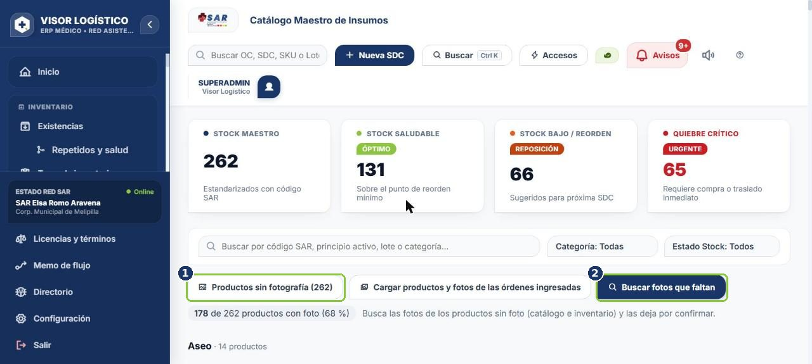
- 1 Productos sin fotografía
- 2 Buscar fotos que faltan
Para qué sirve: tener una sola ficha por producto, con su nombre, su ID de Mercado Público, su proveedor, sus fotos (caja y producto) y dónde está su stock. El catálogo se llena solo: cada orden de compra que se ingresa y cada ingreso de existencias agregan sus productos.
Hoy el catálogo se usa desde cuatro lugares: - COMPRAS · ADQUISICIONES SAR → Catálogo de Insumos: tarjetas con foto, stock y estado. Al tocar una tarjeta se abre la ficha del producto. - Seguimiento de OC → Catálogo de productos: lista para confirmar fotos y subirlas a mano. - INVENTARIO → Existencias → lápiz (Editar Insumo Clínico): el ID del producto y la foto principal. - Revisar productos parecidos, Repetidos y salud y Directorio → Nomenclaturas y correlativos: para mantener el catálogo ordenado.
Quién lo usa: - Catálogo de Insumos, la ficha y Revisar productos parecidos: operador, administrador y superadministrador. - Repetidos y salud y Directorio: administrador y superadministrador. - Pedir al teléfono (en Editar insumo) y la sección Fotos de productos: solo superadministrador.
A. Buscar un producto en el Catálogo de Insumos
- Menú lateral → COMPRAS · ADQUISICIONES SAR → Catálogo de Insumos (también desde Inicio → Accesos → Catálogo de insumos).
- Arriba ves cuatro números: Stock maestro (productos en el catálogo), Stock Saludable, Stock Bajo / Reorden y Quiebre Crítico (stock 0).
- Escribe en el buscador. Busca por descripción, ID de Mercado Público, nombre de inventario o proveedor.
- Si quieres, filtra con Categoría: Todas y Estado Stock: Todos (En Stock Óptimo, Stock Bajo / Reorden, Quiebre Crítico).
- Los productos salen agrupados por categoría. Cada tarjeta muestra la foto, el Cód. MP, el proveedor, las un. en stock por bodega y, si hay una orden abierta, «Pendiente de recepción: N un. (OC …)».
- Toca la foto para verla en grande. Toca el resto de la tarjeta para abrir la ficha.
B. La ficha del producto
- Desde una tarjeta del Catálogo de Insumos, toca el producto. La ficha se abre al costado (en el teléfono, a pantalla completa).
- Arriba: nombre, Cód. MP, categoría, unidades en stock, bodega(s) y próximo vencimiento.
- Fotos: foto de la Caja / envase y foto de Cómo es el producto (ver letra C).
- Dónde está y por lote: bodega, estante, lote, vencimiento y cantidad. Lo que vence antes va primero; lo vencido sale en rojo y lo que vence en menos de 90 días, en amarillo.
- Ingresos y movimientos: primer ingreso, último ingreso, último movimiento y los 25 movimientos más recientes. El resto está en Historial o en Auditoría → Contable.
- Con las flechas ▲ ▼ (o las del teclado) pasas al producto anterior o siguiente. Esc o × cierra.
C. Fotos desde la ficha
Cada producto debe tener dos fotos: la caja o envase (la que se ve en todo el Visor) y cómo es el producto fuera de la caja. 1. En la ficha, sección Fotos, elige: - Foto de la caja (o Cambiar foto de la caja): abre la cámara del teléfono o el selector de archivos. - Foto del producto (cómo es) (o Otra foto del producto): hasta 4 fotos extra. - Buscar en internet: busca en la tienda de Convenio Marco y en internet. Tarda 20 a 40 segundos. 2. Si usaste Buscar en internet, aparecen dos grupos: Caja / envase y El producto. Toca una foto y elige Usar como caja o Usar como producto. Si ninguna sirve, sácale foto con los botones de arriba o abre Ver más en Google Imágenes. 3. Al guardar aparece «Foto guardada». 4. Para quitar una foto extra, toca ✕ junto a ella.
D. Confirmar las fotos que el sistema encontró solo
El Visor busca fotos automáticamente: cada 30 minutos entre 8:00 y 17:00, mientras haya un equipo de bodega con el Visor abierto. Esas fotos se muestran con una marca naranja «?» (por confirmar) hasta que alguien las revise. 1. En la ficha, debajo de la foto por confirmar: - Caja: ✔ Es correcta o ✖ No es. - Producto: ✔ (confirmar) o ✕ (no es: se quita y no se vuelve a buscar sola). 2. También puedes revisarlas en Seguimiento de OC → Catálogo de productos → Fotos por confirmar: Ver en la tienda, Es este producto o No es. Ahí solo salen las fotos de la tienda de Convenio Marco. 3. Para ver qué productos no tienen foto: Catálogo de Insumos → Productos sin fotografía (N). Cada producto dice por qué le falta («Caja: no se encontró (fecha) · se vuelve a buscar el …» o «aún sin buscar») y trae el botón Buscar o sacar foto. 4. Buscar fotos que faltan lanza la búsqueda ahora mismo y sigue en segundo plano: puedes seguir trabajando, y el Visor avisa al terminar.
E. Fotos a mano desde Seguimiento de OC → Catálogo de productos
- Seguimiento de OC → Catálogo de productos.
- Busca con «Buscar por nombre, código o proveedor…».
- En la fila del producto: - Buscar foto: abre Google Imágenes con el nombre. - Pegar: pega una imagen que copiaste (clic derecho → «Copiar imagen»). No aparece en el teléfono. - Subir: elige un archivo de imagen.
- Cargar productos y fotos de las órdenes ya ingresadas vuelve a leer todas las órdenes y busca sus fotos.
- Cierra con Cerrar.
F. El ID del producto (ID de Mercado Público)
Es el número de 6 o 7 dígitos que trae la orden de compra entre paréntesis (por ejemplo, 2228845). Sirve para unir el producto con su orden y encontrar su foto. Es distinto del Código SAR (SAR-000123), que el Visor asigna solo a cada producto. - Al ingresar una orden de compra, el ID queda guardado solo. - En Ingresos: campo ID MERCADO PÚBLICO (opcional). - En Existencias → lápiz → Editar Insumo Clínico: campo ID del producto. - En Recibir mercadería → Agregar producto: campo ID Mercado Público (opcional). - En Auditoría → Disponible: los productos provisionales sin ID traen el botón Asignar ID.
G. Revisar productos parecidos
- Menú lateral → MOVIMIENTOS → Revisar productos parecidos.
- Verás Posibles duplicados (N grupo(s)). Cada grupo dice si son nombres casi iguales (una letra, un punto, un espacio o un acento de diferencia), mismo nombre en varios lugares o productos que comparten el mismo ID con nombres distintos.
- Más abajo aparece la lista Ingresados manualmente, aún provisionales: productos que se crearon al emitir un acta sin stock.
- Esta pantalla no cambia nada. Anota lo que haya que unir y avísale a un administrador, que lo une en Repetidos y salud.
- Actualizar vuelve a comparar.
Ojo: el mismo producto en dos bodegas distintas, o tallas distintas («TALLA S», «TALLA M», «TALLA L»), aparecen como parecidos, pero no son duplicados. No se unen.
H. Repetidos y salud del inventario (administrador)
- Menú lateral → INVENTARIO → Repetidos y salud (con un número rojo si hay casos).
- La pantalla Salud del inventario revisa: Nombres de bodega con espacios de más, Productos con stock sin bodega, Productos repetidos en una bodega, Unidades adeudadas en productos que ya tienen stock, Bodega que no existe, Lotes que no suman el total y Cantidades negativas.
- Antes de corregir, descarga el respaldo del día (lo pide la misma pantalla).
- Según el caso, usa Unificar nombre, Asignar, Unir, Regularizar o Descontar N. Cada botón pide confirmar y explica qué va a pasar.
- Volver a revisar recarga la revisión.
I. Directorio → Nomenclaturas y correlativos (administrador)
- Menú lateral (abajo) → Directorio → pestaña Nomenclaturas y correlativos.
- Es una tabla, solo para leer, con todos los códigos que usa el Visor: formato, ejemplo, para qué sirve, quién lo asigna y el último número emitido. Por ejemplo: SAR, lote, ING, CAM, AJU, AE, SOL, REC, BUL y TRA.
- Busca con «Buscar formato, ejemplo o uso…».
- La otra pestaña, Errores y alertas, explica cada aviso del sistema por su código ERR-XXX-NNN.
Si pasa esto… - La tarjeta dice «0 un. en stock», pero el producto sí está en Existencias: el catálogo suma el stock por nombre. Si el producto está guardado en Existencias con otro nombre, no lo suma. Revisa el nombre en Revisar productos parecidos. - «Aún no hay productos…»: espera unos segundos. El catálogo vuelve a intentar mientras esté vacío. Si sigue igual, usa Cargar productos y fotos de las órdenes ingresadas. - «Para buscar en internet falta actualizar el script…»: avísale al administrador (Configuración → SCRIPT Y CORREO). - «No se pudo pegar»: el navegador no dio permiso. Usa Subir. - «Máximo 4 fotos extra: quita una antes.»: quita una foto con ✕ y vuelve a intentar.
Reglas - Un producto = una ficha. Antes de crear un producto nuevo (en un ingreso, una recepción o un acta), búscalo por nombre y por ID. - El nombre del producto va en MAYÚSCULAS, igual que en la orden de compra. - La categoría (familia clínica) y el tipo de insumo (médico / aseo / oficina) son cosas distintas: llena las dos. - Una foto propia (subida o sacada con la cámara) manda sobre la foto automática. - Si una foto automática no corresponde, márcala No es: así no vuelve a aparecer.
Sin internet: el Catálogo de Insumos y la ficha muestran la última copia guardada en el equipo. Las fotos propias se ven, pero puede que las de la tienda o de internet no carguen. Buscar fotos, confirmar y subir necesitan conexión.
4.2 Órdenes de compra: Seguimiento de OC
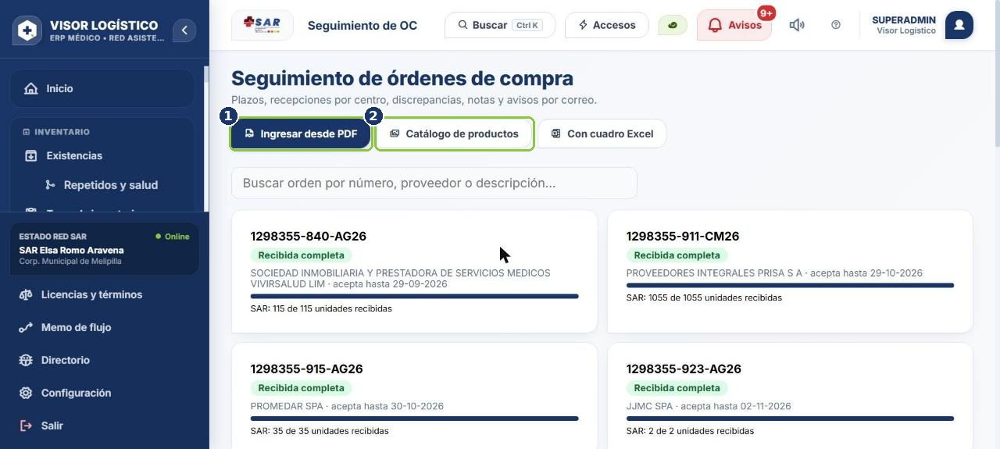
- 1 Ingresar desde PDF
- 2 Catálogo de productos
Para qué sirve: seguir cada orden de compra (OC) de Mercado Público desde que se ingresa hasta la recepción conforme: plazos, qué llegó, qué falta, incidencias, archivos y una bitácora con fecha y autor.
Quién lo usa: operador, administrador y superadministrador. Solo administrador y superadministrador ven Anular (una recepción), Registrar decisión de multa, Cerrar seguimiento / Reabrir seguimiento, Configurar correo y Eliminar orden.
A. Ingresar una orden desde el PDF
- Menú lateral → COMPRAS · ADQUISICIONES SAR → Seguimiento de OC (o Inicio → Ingresar orden de compra).
- Toca Ingresar desde PDF.
- En Orden de compra (Mercado Público): PDF o Excel, sube el archivo. El Visor lo lee y muestra lo que encontró.
- Si tienes el Cuadro de distribución, súbelo en su recuadro (es opcional). En la tabla de memos, marca en Cargar los memos que corresponden (por defecto, los del SAR).
- Si tienes el correo del despacho, pega su texto en Correo del despacho: así se leen el plazo para aceptar y los días de entrega.
- Revisa cada dato (N° de orden, proveedor, fechas, plazos, productos, cantidades y valores). Puedes corregir, quitar una fila (✕) o agregarla (+ Producto).
- Toca Ingresar orden. Se abre la ficha de la orden.
Orden histórica: si la orden ya se recibió y se usó antes de existir el Visor, marca Orden histórica, indica Fecha de recepción y adjunta, si los tienes, la recepción conforme y el acta. Queda cerrada y no mueve stock.
Con cuadro Excel: si no tienes el PDF, usa Con cuadro Excel. Ahí son obligatorios el N° de orden, la fecha Aceptada por el proveedor y el Excel del cuadro.
B. La ficha de la orden
- Plazo de la orden: emitida, aceptada (opcional), plazo en días hábiles, fecha en que vence y multa. El cuadro de color dice Por aceptar, Aceptación vencida, Vence en N días hábiles, Atrasada N días hábiles, Recibida completa o Seguimiento cerrado.
- Barra «Siguiente paso»: dice qué hacer ahora y trae el botón que corresponde (Recibir mercadería, Recibir lo que falta, Recepción conforme, Ir a Actas de entrega). Registrar aceptación es opcional.
- Pedido y recibido: recibido / pedido por producto (se abre al tocarlo). Desde ahí también: Buscar fotos de esta orden y, cuando ya llegó algo, Lotes y vencimientos y Descargar pendientes.
- Recepciones y recepción conforme, Pendiente de recibir, Discrepancias, Datos de la orden, memos y distribución, Archivos de la orden y Bitácora de la orden.
- ← Órdenes vuelve a la lista.
C. Recibir mercadería (cuando llega el camión)
- En la ficha, toca Recibir mercadería (o Recibir lo que falta).
- Si la orden tiene varios memos, marca en ¿Qué memos se recibieron? los que llegaron juntos.
- En Guías de despacho, escribe el N° guía de despacho. Si quieres, sube la Foto o PDF de la guía: el Visor intenta leer el lote, el vencimiento y la empresa, y los deja escritos para que los revises. Si llegaron varias guías, usa Agregar otra guía.
- Revisa la Fecha (por defecto, hoy).
- Por cada producto, escribe en Llega ahora cuántas unidades llegaron. ✔ N anota que llegó completo. Marcar todo recibido marca todos y Limpiar borra todo.
- Revisa Producto en inventario: elige de la lista el nombre exacto que ya existe en bodega.
- Si quieres dejar lote y vencimiento ahora, marca Anotar lote y vencimiento ahora (también se puede hacer después).
- En Cajas, anota cuántas cajas o bultos llegaron: se imprime una etiqueta por caja.
- Si algo vino mal, elige la Incidencia (Dañado / defectuoso, Vencimiento corto, Producto distinto al pedido, Faltante, Otro) y escribe el detalle.
- Elige la Bodega de destino (por defecto, Bodega Central). Si no existe, el administrador la crea con + Nueva bodega.
- Deja marcado Ingresar lo recibido al stock de … para que el stock quede disponible y se descuente al entregarlo con un acta.
- Avisar por correo a la lista viene marcado: avisa a Compras de esta recepción.
- Toca Guardar recepción. Al final aparece «Recepción cargada» con su número REC-AAAA-NNNNN.
- Después se abre la ventana Recepción conforme · REC-… con Descargar PDF, Descargar Word, Editar datos y Cerrar. Elige si es Parcial o Total.
Si un producto llegó pero no estaba en la lista: Agregar producto → escribe la descripción (el Visor sugiere nombres), el ID si lo tienes, Pedido según el documento y Llega ahora → Agregar a la lista.
D. Recepción conforme con correo
- Cuando ya está todo recibido, la barra dice «Todo recibido. Siguiente paso: la recepción conforme…». Toca Recepción conforme. Si falta mercadería y quieres darla por conforme igual, usa Recepción conforme con correo (parcial).
- En Guías o facturas del proveedor, revisa el tipo (Guía de despacho / Factura), el N° del documento y sube el PDF de cada una (Agregar otra guía o factura si son varias).
- Revisa ¿Con qué fecha se emite el acta?: el Visor propone el día en que se registró la recepción. Usar hoy la cambia a hoy.
- Tipo de recepción: Total o Parcial (faltan N unidades).
- Revisa el Encabezado del acta y el detalle: puedes quitar o corregir líneas, y queda igual en el PDF.
- Revisa Contraparte técnica (firma del acta), Correo firmado por y Cargo.
- Enviar correo con el acta y la guía/factura a la lista viene marcado. Revisa Para y Cc.
- Toca Guardar. El acta queda en Archivos de la orden y en la bitácora.
Después puedes usar Editar recepción conforme o Regenerar recepción conforme (modelo vigente) desde Archivos de la orden. Cada recepción (REC-…) tiene además sus propios botones PDF, Word y Editar.
E. Otras acciones de la ficha
- Lotes y vencimientos: completa el lote y el vencimiento de lo que entró sin ellos («S/L»). Puedes asignar solo una parte de las unidades.
- Descargar pendientes: baja un archivo CSV (se abre con Excel) con lo que falta por recibir.
- Resolver: (producto): cierra una incidencia. Hay que escribir cómo se resolvió.
- Agregar archivo: guarda en la orden un PDF, un Excel o una imagen (máximo 8 MB), con su tipo y un comentario.
- Bitácora de la orden: escribe el comentario, elige la Etapa (opcional), adjunta archivos si quieres y toca Registrar comentario. No se puede editar ni borrar. Enviar correo a la lista viene desmarcado.
- Generar acta (N un.): si la orden trae productos para otros centros, arma el acta de entrega para ese centro con lo que ya está en bodega.
- Anular una recepción (administrador): pide el motivo, devuelve lo recibido a «por recibir» y lo saca del stock. No se puede si ese stock ya se entregó.
- Eliminar orden (administrador): solo si no tiene recepciones. Hay que escribir el N° de la orden para confirmar.
Si pasa esto… - «Ya existe — Esa orden ya está en seguimiento.»: la orden ya fue ingresada. Búscala en la lista. - «Revisa antes de guardar …» (producto nuevo, guía ya registrada): lee el aviso. Si está correcto, toca Guardar recepción otra vez. - «N producto(s) no existen en el inventario y se crearían como nuevos»: casi siempre es un nombre mal elegido en Producto en inventario. Corrígelo antes de guardar para no crear un duplicado. - «Cantidad no válida»: escribe un número entero que no supere lo pendiente. - «Vencimiento pasado»: revisa la fecha de vencimiento. - Recepción conforme: «Hay N incidencia(s) abierta(s): resuélvelas antes…»: usa Resolver en Discrepancias. - «Faltan N unidad(es) por recibir. … marca "Recepción parcial".»: cambia el Tipo de recepción a Parcial. - «Adjunta el PDF de la guía o factura.»: cada documento necesita su PDF. - «Correo programado»: se hizo fuera del horario de envío (lunes a viernes, 8:00 a 17:00, sin feriados). Sale solo después. - «Adjunta los archivos»: el envío automático no está configurado. Se descargaron el acta y la guía y se abrió un borrador de correo: adjúntalos a mano. - «No se puede eliminar» la orden: primero hay que anular sus recepciones.
Reglas - Lo que entra a stock por una OC queda en la bodega elegida y en el historial con su N° REC. - La aceptación del proveedor es opcional. Si llegó mercadería, se da por aceptada. - Los plazos se cuentan en días hábiles (lunes a viernes, sin feriados). - «Llega ahora» se cuenta en unidades, igual que en la orden. Si la orden viene por cajas, conversa antes con el encargado (ver notas). - La recepción conforme lleva siempre la firma y el timbre de la contraparte técnica. - La bitácora y los archivos de la orden no se modifican.
Sin internet: la lista y la ficha muestran la última copia. Guardar recepción funciona: queda en cola con un número provisional REC-P-…, se aplica sola al volver la conexión y recién ahí sale el correo. Las fotos o PDF de las guías no se guardan en la cola: súbelos después con Agregar archivo. Ingresar desde PDF, Recepción conforme, Buscar fotos, anular y eliminar necesitan conexión.
4.3 Bitácora de órdenes
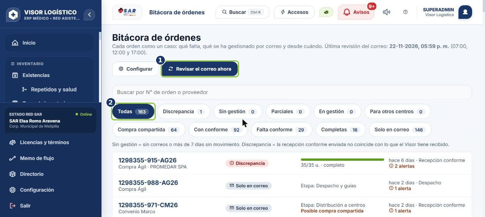
- 1 Revisar el correo ahora
- 2 Filtros por estado
Para qué sirve: ver cada orden como un «caso», cruzando lo que dice el Visor (pedido y recibido) con los correos de la cuenta de Compras: despachos, guías, facturas, reclamos y recepciones conformes. Solo lee el correo: no envía ni cambia nada.
Quién lo usa: operador, administrador y superadministrador. La configuración del script la hace el administrador.
Paso a paso 1. Menú lateral → MOVIMIENTOS → Bitácora de órdenes. 2. Arriba ves Última revisión del correo. El correo se revisa solo a las 07:00, 12:00 y 17:00. Para revisarlo ahora, toca Revisar el correo ahora. 3. Busca con «Buscar por N° de orden o proveedor» o filtra con: Todas, Discrepancia, Sin gestión, Parciales, En gestión, Para otros centros, Compra compartida, Con conforme y Falta conforme. 4. Cada fila muestra el estado, el avance (recibido / pedido), el último correo y las alertas. 5. Toca una orden para abrir el caso a pantalla completa: Ciclo de vida (6 etapas), Hallazgos, Bitácora (vista Por etapa o Cronológica) y Productos y centros. 6. Abrir en Seguimiento de OC lleva a la ficha de la orden. Volver a la lista (o Esc) cierra.
Si pasa esto… - «Aún no hay datos del correo. Configura el script…»: falta conectar el script de la cuenta de Compras (botón Configurar). Mientras tanto se ven solo las órdenes del Visor. - «La primera revisión del correo todavía está en curso»: es normal la primera vez. Se completa sola en las siguientes revisiones. - Estado «Solo en correo»: la orden aparece en los correos, pero no está ingresada en el Visor. Ingrésala en Seguimiento de OC.
Reglas - Discrepancia = la recepción conforme enviada por correo no coincide con lo recibido en el Visor (por ejemplo, dice TOTAL y faltan unidades). - Sin gestión = sin correos, o más de 7 días sin movimiento y sin nada recibido.
Sin internet: no funciona (lee el correo en línea).
4.4 Ajustes de stock
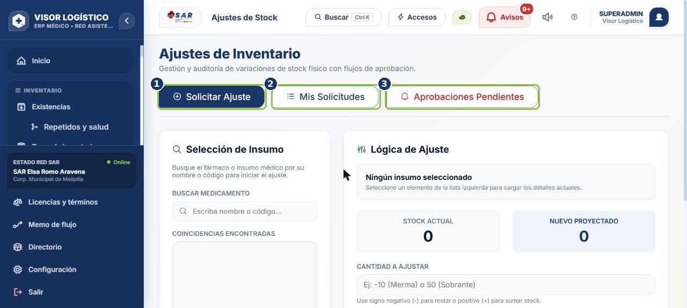
- 1 Solicitar ajuste
- 2 Mis solicitudes
- 3 Aprobaciones pendientes
Para qué sirve: corregir la cantidad de un producto cuando lo que hay en la bodega no coincide con el sistema (merma, daño, error de digitación, conteo, devolución…). Cada ajuste queda con un motivo, una observación y un código correlativo AJU-AAAA-NNNNNN, y aparece en el Historial y en el informe contable.
Quién lo usa: - Superadministrador: el ajuste se aplica al tiro. Además, aprueba o rechaza las solicitudes de los demás en Aprobaciones Pendientes. - Administrador y operador: el ajuste queda como solicitud hasta que el superadministrador la apruebe. Siguen su estado en Mis Solicitudes. - Enfermero: no tiene acceso.
A. Hacer o solicitar un ajuste
- Menú lateral → MOVIMIENTOS → Ajustes de Stock. Se abre en Solicitar Ajuste.
- En Buscar Medicamento, escribe al menos 2 letras del nombre, el código, el lote o el ID.
- En Coincidencias Encontradas, toca la tarjeta correcta. Cada tarjeta trae foto, nombre completo, bodega, ID, stock y lotes con su vencimiento (amarillo = vence en 90 días o menos; rojo = vencido). Fíjate en la bodega: el mismo producto aparece una vez por cada bodega.
- En ¿A qué lote va el ajuste?, elige el lote. Si los lotes no suman el total, aparece Sin lote específico (el sistema elige el que vence antes). Lote nuevo sirve solo para sumar: escribe el lote y el vencimiento.
- En Cantidad a Ajustar, escribe la diferencia con signo: -10 para restar, 50 para sumar. Nuevo Proyectado muestra cómo queda.
- Elige el Motivo del ajuste: Error de digitación, Producto no está / no se encontró, Merma o daño, Conteo físico (toma de inventario), Devolución, Corrección de lote o vencimiento, Corrección de proveedor o documento, Cambio de bodega u Otro.
- Escribe la Observación de Auditoría: qué pasó y cómo lo comprobaste (más de 10 caracteres).
- Toca Ejecutar Ajuste y Auditar.
- Revisa el resumen en ¿Confirmar el ajuste? (producto, antes → después, lote, motivo). Toca Confirmar ajuste (superadministrador) o Enviar solicitud (los demás). Revisar vuelve atrás.
- Resultado:
- Superadministrador: «Ajuste realizado — Código: AJU-…».
- Los demás: «Solicitud Creada — … código: AJU-… Debe ser aprobada por el Superadministrador.»
B. Mis Solicitudes
- Toca Mis Solicitudes.
- Ves tus solicitudes con Código, Insumo, Fecha, Variación, Stock (Prev -> Proy), Estado (PENDIENTE, APROBADO, RECHAZADO) y la observación (con el lote, y el motivo si se rechazó).
- Cuando el superadministrador la aprueba o la rechaza, te llega un aviso: «Ajuste AJU-… Aprobado» o «Ajuste AJU-… Rechazado — Motivo: …».
- El superadministrador ve aquí las solicitudes de todos.
C. Aprobaciones Pendientes (solo superadministrador)
- Toca Aprobaciones Pendientes. El número rojo indica cuántas hay.
- Revisa cada fila: código, quién la pidió, insumo, fecha, variación (con lote) y justificación. Aquí también llegan los faltantes de las tomas de inventario.
- Toca Aprobar: el ajuste se aplica en ese momento sobre el stock real y aparece «Solicitud Aprobada».
- O toca Rechazar, escribe el motivo en la ventana del navegador y acepta. Aparece «Solicitud Rechazada».
Si pasa esto… - «Debe seleccionar un insumo.»: toca una tarjeta de la lista. - «Ingrese una cantidad válida (+ o -). No puede ser cero.»: escribe un número distinto de 0. - «Elige el motivo del ajuste.» o «La observación debe tener más de 10 caracteres.»: completa el campo. - «El stock resultante no puede ser negativo.» o «El lote X tiene N u.: no se pueden restar M.»: estás restando más de lo que hay. Revisa el lote o la cantidad. - «Elige el lote al que va el ajuste…»: falta elegir el lote, o el «lote nuevo» repite el nombre de uno que ya existe. - «A un lote nuevo solo se le puede sumar.»: para restar, elige un lote existente. - «Además hay N u. reservadas por actas por confirmar…»: esas unidades siguen físicamente en la bodega. Si contaste el estante, réstalas antes de ajustar. - Al aprobar: «La solicitud cambió mientras la revisabas…» o «El lote … cambió desde el conteo…»: alguien movió ese stock entremedio. Rechaza la solicitud y pide que se vuelva a contar. - «Solicitud ya procesada»: ya estaba aprobada. No se aplicó dos veces.
Reglas - Un ajuste no reemplaza a un traspaso, una entrega con acta ni una corrección de ingreso. Úsalo solo cuando la cantidad física no coincide. - Corrección directa de un ingreso (lápiz en Historial): solo dentro de las 12 horas siguientes y si todavía no ha salido nada de ese producto. Después, se corrige con un ajuste. - El código AJU se asigna al confirmar. Si después la solicitud se rechaza, ese número no se vuelve a usar. - El stock nunca puede quedar negativo.
Sin internet: el ajuste se guarda en el equipo («Guardado sin conexión») y se aplica solo al volver la conexión, con el stock de ese momento. El código AJU se asigna al sincronizar. Si ya no alcanza el stock, queda «para revisar» en el indicador N sin sincronizar. Aprobar y Rechazar necesitan conexión.
4.5 Historial
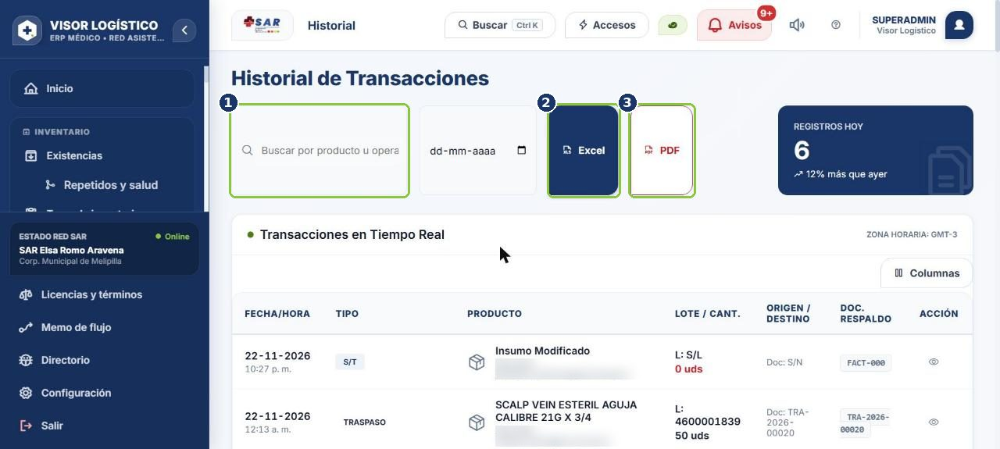
- 1 Busca y filtra por fecha
- 2 Exportar a Excel
- 3 Exportar a PDF
Para qué sirve: ver todos los movimientos de stock en orden de fecha (ingresos, traspasos, entregas, ajustes, recepciones…), con quién los hizo y su documento de respaldo. El historial no se puede modificar.
Quién lo usa: operador, administrador y superadministrador. Excel, PDF y el lápiz Editar ingreso son solo para administrador y superadministrador.
Paso a paso 1. Menú lateral → MOVIMIENTOS → Historial (pantalla Historial de Transacciones). 2. La tabla muestra los últimos 50 movimientos y se actualiza sola: FECHA/HORA, TIPO, PRODUCTO (con el operador), LOTE / CANT., documento y código de ingreso (ING-…), DOC. RESPALDO y ACCIÓN. 3. Para buscar, escribe en «Buscar por producto u operador...». También encuentra lotes, tipos, documentos e IDs, pero solo entre los movimientos ya cargados. Para buscar más atrás, toca primero Cargar Más Resultados (trae 50 más cada vez). 4. Para ver un día, elige la fecha en el calendario. LIMPIAR vuelve al tiempo real. 5. El ojo muestra producto, fecha y usuario. 6. Lápiz (solo en los ingresos de proveedor): abre Editar ingreso. Corrige y toca Guardar cambios. Si cambias cantidad, lote o vencimiento, el Visor pide el motivo y entrega un código CAM-…. 7. Excel o PDF descargan lo que está cargado en la tabla.
Para ver la historia completa de un producto (el kárdex, con el saldo línea a línea) usa Auditoría → Contable (siguiente módulo).
Si pasa esto… - No encuentro un movimiento antiguo: toca Cargar Más Resultados hasta llegar a esa fecha, o filtra por el día. - «Has llegado al final del historial.»: ya no hay más movimientos. - «No se pudo buscar por fecha.»: reintenta con conexión. - Al editar: «Pasaron más de 12 h desde el ingreso.» o «Ya salió stock de este insumo…»: ya no se puede corregir directo. Usa Ajustes de Stock. - «Por ahora solo se editan los ingresos de proveedor…»: las entregas, traspasos y ajustes no se editan desde aquí.
Reglas - No hay que borrar movimientos: los errores se corrigen con un movimiento nuevo (un ajuste o una edición con código). - El N° de OC o documento de un ingreso se puede agregar después con el lápiz, sin límite de tiempo.
Sin internet: muestra los movimientos recientes guardados en el equipo (hasta 3.000). Lo hecho sin conexión aparece cuando se sincroniza. Editar un ingreso necesita conexión.
4.6 Auditoría
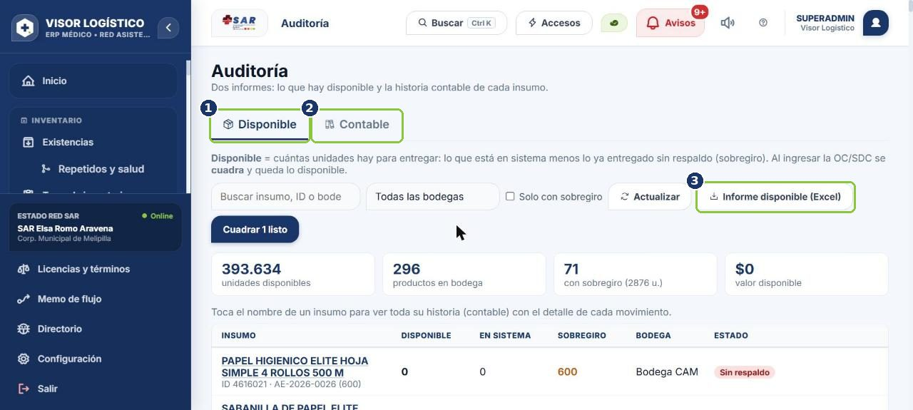
- 1 Disponible
- 2 Contable
- 3 Informe en Excel
Para qué sirve: dos informes para cuadrar el inventario: - Disponible: cuántas unidades hay realmente para entregar, por producto y bodega (lo que está en el sistema menos lo ya entregado sin respaldo, el «sobregiro»). - Contable: el libro de cada producto (kárdex): cada entrada y salida con su motivo, bodega, lote, código, responsable y saldo.
Quién lo usa: operador, administrador y superadministrador. El enfermero no la ve.
A. Pestaña Disponible
- Menú lateral → MOVIMIENTOS → Auditoría. Se abre en Disponible.
- Arriba: unidades disponibles, productos en bodega, con sobregiro y valor disponible.
- Busca con «Buscar insumo, ID o bodega…», filtra con Todas las bodegas o marca Solo con sobregiro.
- Cada fila muestra Disponible, En sistema, Sobregiro, Bodega y Estado: OK, Listo para cuadrar, Sin respaldo o Provisional.
- Si el estado es Listo para cuadrar (hay stock para cubrir lo entregado sin respaldo), toca Cuadrar y escribe, si lo sabes, el N° de la OC o SDC. Cuadrar N listos hace todos juntos.
- Si es un producto provisional sin ID, toca Asignar ID y escribe el ID de Mercado Público.
- Informe disponible (Excel) descarga el informe (archivo CSV que se abre con Excel). Actualizar recarga.
- Toca el nombre de un producto para abrir su libro en Contable.
B. Pestaña Contable
- Toca Contable.
- Escribe en «Producto o ID de Mercado Público…» y elige el producto de la lista.
- Ves Stock actual (todas las bodegas), Saldo según movimientos, Sobregiro y Reservado por actas.
- Si dice «El stock actual difiere en N u. de lo que suman los movimientos…», hay stock que se cargó antes del sistema, por toma de inventario o sin movimiento. Si dice «El stock actual coincide…», el libro está cuadrado.
- Toca cualquier línea del libro para ver todo el detalle del movimiento (tipo, cantidad, efecto en el stock, lote, desde/hacia, código, responsable, motivo, documentos).
- Descargar libro (Excel) baja el libro del producto.
- Más abajo están Recepciones de mercadería (busca por REC-…, orden o guía) y Cambios con código de seguimiento (los CAM y AJU con su motivo).
Si pasa esto… - «No se cuadró»: léelo y reintenta con conexión. Si sigue, avisa al administrador. - No encuentro el producto en Contable: prueba con el ID de Mercado Público o con parte del nombre.
Reglas - Disponible es lo que se puede prometer a un centro. En sistema puede incluir unidades ya entregadas sin respaldo. - Los productos Provisional o Sin respaldo se crearon al entregar sin stock. No se borran: se cuadran al ingresar su OC o SDC.
Sin internet: muestra la última copia del inventario y de las órdenes. Cuadrar y Asignar ID necesitan conexión.
4.7 Fotos de productos (solo superadministrador)
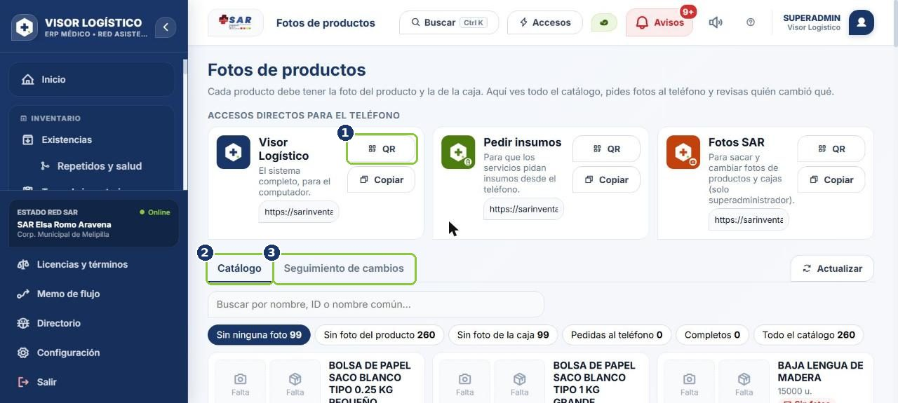
- 1 QR para abrir en el teléfono
- 2 Catálogo
- 3 Seguimiento de cambios
Para qué sirve: completar las dos fotos de cada producto (producto y caja) desde el teléfono, ver todo el catálogo ordenado por lo que falta y saber quién subió o cambió cada foto.
Quién lo usa: solo el superadministrador. Para cualquier otro rol, la sección no aparece en el menú y la página del teléfono no lo deja entrar. (Ojo: la ficha del producto, en el Catálogo de Insumos, sí permite subir fotos al resto del personal de bodega.)
A. En el computador: sección Fotos de productos
- Menú lateral → INVENTARIO → Fotos de productos.
- Accesos directos para el teléfono: Visor Logístico, Pedir insumos y Fotos SAR, cada uno con QR y Copiar.
- Pestaña Catálogo: todo el catálogo, primero lo que no tiene ninguna foto. Filtros: Sin ninguna foto, Sin foto del producto, Sin foto de la caja, Pedidas al teléfono, Completos y Todo el catálogo. Busca con «Buscar por nombre, ID o nombre común…».
- En cada producto: - Toca el recuadro Producto o Caja para subir o cambiar esa foto desde el computador. - Pedir al teléfono lo deja en la lista de pendientes del teléfono (Quitar pedido lo saca).
- Pestaña Seguimiento de cambios: fecha, producto, qué foto, qué pasó (Subió foto nueva / Cambió la foto), quién y desde dónde (teléfono o computador).
- Actualizar recarga.
B. Instalar «Fotos SAR» en el teléfono (una sola vez)
- En Accesos directos para el teléfono, toca QR en Fotos SAR.
- Escanéalo con la cámara del teléfono y abre el enlace.
- Agrégalo a la pantalla de inicio (Compartir → Agregar a inicio). El ícono es naranjo, con una cámara.
- Entra con tu correo y clave del Visor (Entrar). La sesión queda guardada en el teléfono.
C. En el teléfono: sacar las fotos
- Abre Fotos SAR. Por defecto se ven los Pendientes: productos con stock a los que les falta una foto, y los pedidos desde el computador (marcados pedida).
- Para ver todo, toca Todo el catálogo.
- Filtra con los botones (Todos, Pedidas, Sin foto del producto, Sin foto de la caja…) o busca con «Buscar producto…».
- En cada producto, toca: - Foto del producto: el producto fuera de la caja. - Foto de la caja: el envase con su etiqueta. - Otra foto: un detalle extra (rótulo, lote, etc.).
- Se abre la cámara. Saca la foto y confirma. Aparece «Foto guardada» y el recuadro cambia a «Producto listo · cambiar» o «Caja lista · cambiar».
- Cuando el producto tiene las dos fotos, sale solo de los pendientes.
- Salir cierra la sesión.
Si pasa esto… - «Esta cuenta no puede cargar fotos: solo el superadministrador.»: la cuenta no tiene ese rol. - «Correo o clave incorrectos.» o «Sin internet.»: revisa los datos o la conexión. - «Ya tiene 4 fotos adicionales: quita una en la ficha del producto antes de agregar otra.»: quita una foto desde la ficha del producto (Catálogo de Insumos). - «Todo al día: no hay productos sin fotos.»: no queda nada pendiente. - La foto queda «subiendo» y no termina: probablemente no hay internet. Espera la conexión con la página abierta (ver notas).
Reglas - Caja = la foto que se ve en todo el Visor. Producto = cómo es por dentro. Si las cambias de lugar, se confunde al personal. - Saca la foto con buena luz, la etiqueta derecha y legible, y sin datos de pacientes ni personas. - Las fotos se achican solas en el teléfono para que el catálogo no pese.
Sin internet: la página abre si ya se usó antes, pero para entrar la primera vez y para guardar fotos hace falta conexión.